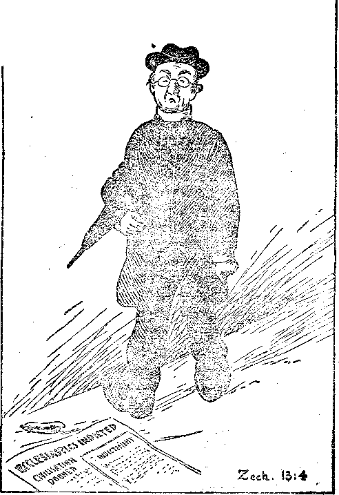

PE
SHORES-.
Canada, andjoreign Countries $ 150
REMARKABLE ABILITY IN HANDWRITING
A JOINT DECLARATION OF MEDICAL LIBERTY RIGHTS
ARE WHITE MEN SICK?
WORLD BEGINNING
'WORLD
BL, - , -=
Vol. VI Bi-Weekly No. 140
January 28, 1925
Contents of the Golden Age
Social and Educational
Education and Knowledge versus Thtnkixg . .
Hemarkable Ability ' in Handwriting
Political-Domestic and If'oREiclN
Mexico, Brazil, Argentine ............... 259
Germany, Italy, Tripoli . ... . . . . . . . . .... 261
Asia and Australia . ............ . . . . 261
Fresno's Newspaper Battle ... . . ....... .
. Home and Health
A Joint Declaration of Medical LHehty Hights . . . . ... 266
Proposed Constitutional .Amendment Guaranteeing Moffical Liberty. 269
Religion and Philosophy
Perhaps the Vicar Will Say a Few Worms (Cartoon) . ... . 271
The Day of Atonement . 2 2 . . ....... .
How May One Become a Chmstlax? . . ....... •
Man a Sinner .................. 277
Office of the Christian ........
Rome Reverses Even the Ten Comma?, daevi s
Rome Divides^ Worship ................ 283
Worship of Images .................. 284
Studies in "The Harp 0]’ God"............_ . . 287
Copartners and Proprietors Address: 18 Concord Street, Brooklyn, N. Y., U. £, 4. CLAYTON J. WOODWORTH • . . Editor ROBERT J. MARTIN . Business Manager
WM. F. HUDGINGS • • Sec'y and Treas.
Five Cents a . Copy—$1.00 a Year Make Remittances to THE GOLDEN AGE.
Foiuhgn Offices: British • • • • • 34 Craven Terrace, Lancaster Gate, London W. 2 Canadian •••••"••• 38-40 Irwin Avenue, Toronto, Ontario Australasian • . . . ii e • 495 Colli ns Street, Melbourne, Australia
South A/rdean • • . • • • 6 Lelie Street, Cape Town, South Africa , Sntered as second-class matter at Brooklyn, N. Y., under the Act of March 3. 181'1
—.....~^r=x_
Volume VI Brooklyn, N. Y., Wednesday, January 28, 1925 Nmnher HO\
[Uadiocast, with other items, from Watchtower 'VEER on a wave length of 273 meters, by the Editor]
Mexico—Brazil—Argentine
FROM time to time despatches have indicated that Japan is seeking in Mexico an outlet for -surplus population. ~ Japanese envoys have recently visited Mexico with that end in view, and there has been some apprehension that colonization south of the border might mean the gradual infiltration of the United States from the south. It now appears, however, that Mexican laws forbid foreign colonization near the sea coast .or within sixtimiles of the border; and that Nlexico, remembering the loss of Texas
after it had been well colonized by Artlericans, does not wish any Asiatic colonization at all.
For three hundred years one of the regiments of Brazil has had as nominal colonel one of the irnaginary saints, named Anthony. Brazil has been paying his salary right along to one of the religious associations; but an honest man. became Minister of VVar in Brazil and has just issued an order that St. Anthony, having served three centuries, is now gazetted and placed on the retired list, which means that this particular graft is over.
By. a vote of seven to six the Argentine Council of Ministers has decided to discontinue any appropriations for the maintenance of an embassy to the Vatican. This action follows similar action by the French government within the past few weeks. Only a brief tinie ago the Argentine government served notice on the Vatican that its representative was unwelcome in Argentina, owing to interference in domestic political affairs.
The world has had its first International Congress on Social Economy, the sessions of ,vhich have just been concluded at Buenos Aires. Its recomnlendations include a universal eighthour day, uniform social insurance laws, hygienic protection of workingmen, cooperative 'luarketing and decentralization of population. It is a forward step in a right direction.
TIIE. United States . having now safely received the ZH-3 Zeppelin, and being' already the possessor of the Shenandoah, England has gone -her one better by placing a contract- with- "Vickers & Company for a zeppelin that will have a capacity of - five million cubic feet. This is twice the capacity of the ZR-3 and then some.
England's super-zeppelin will be 720 feet long, 140 feet high, will have a speed of fifty rniles an hour, and will be operated by seven engines each of 600 horse-power. The fuel
will be crude oil. Twenty tons will be available for goods and passengers, spread out over two decks. Leaving London on Saturday noon, the ship 'will arrive in Cairo on Monday noon.
The statement of the Lord that unless the days of the hnpending troubles should be cut short there 'would no flesh be saved receives added weight £1'0111 the following statelnent by General E. D. S\vainton of the British Army. General Svyuinton said : "'^ehe great future weapon of war will be deadly germs. \Ve have, since the war, discovered and developed germs which, dropped upon cities and arniies, will slaughter a nation in a day." •
Aniericans are mere beginners in diplOlnacy a.s cOlnpared with the brilliant stateslnen of Britain. ,Ve always find out later just what it was they had in niind when they talked. ,¥ e never find it out at the time. ..A.t present we are wondering what Sir Auckland Geddes, former British lUnbassador at 'Yashington, had iu rnind when he said in a speech in London recently: "\Ve know that we have yielded the position of leadership to America in connection with the work designed for the higher serviee- of humanity." Is it possible that Sir Auckland and hi3 friends want America to be the head of the-League of Nations, instead of the tail, as was originally planned? 'Ve can only wonder and wait. - .......
In a seven-month perioa the United States Government paid out to two British lines $401,000 for mail assigned to those vessels to carry-abroad for the United States' postal administra-' tion; but in that same time twelve of Uncle Sam's best ships- headed in the other direction received a total of less than $5,000, four of them nothing at all. The Government is now making an inquiry into- this, with a view of seeing whether fair play cannot be had.
Thrteen villages and parishes have disappeared from the East Riding of Yorkshire within a few hundred years last past. In one place a forest lies dromred. In another place the records show that certain men were excommunicated for poaching where fishes now live. On the rocky Jersey shore there is a tower which was built in the time of Napoleon, bl1t which after less than 120 years is now nearly two miles out at sC'a.
Three women, spiritualists, took pictures of London's Cenotaph which, when developed, showed photographs of faces dirnly revealed about the top of the monument. Accused of fraud, the woman explained that these photographic results "come from some power which works through me, and over which I have no control." We accept this as correct. The pO'w-ers are demoniacal. '
After the death of a ten-year-old patient at Gloucester, Dr. IIadwen, the world's most fa-IUOUS anti-vivisectionist and anti-vaccinationist, ,vas arrested, charged with manslaughter, because he had failed to adnlinister antit.oxin. During the course of the trial, which lasted a week, Dr. Hadwen when asked why he did not follow the general view of his fello'w physicians retorted that at one time the whole medical profession were in favor of bleeding. When asked why he set up. his judgment as against that of all the other doctors, he answered by the one word Galileo. When the jury, after twenty minutes deliberation, brought in a verdict of Not Guilty, Dr. Hadwen received one of the greatest demonstrations ever witnessed in England. .
Twenty million dead rats are the results of a week's campaign recently waged in Great Britain. It was calculated that about seventy percent of the baits fixed found victims. A form of poison was used called red squill, which has the peculiar property of killing rats but being harmless to domestic animals.
Possibly influenced more or less by the Ku Klux Klan movement, - England has under way a fiery cross crusade. A cross made up of burning lamps is - being taken around from one church building to another. Squads of men watch the lamps to - see that they do not go out. It makes quite an exciting time for the small boys, who wonder, as do those of more mature years, what it is all about and what good it can possibly do. The clergy are reported as saying that they are deteITllined by this means to get a fresh outpouring of the holy spirit. We do not remember that the early"" church ever engaged in such a crusade, -but they had the holy spirit.
lreland-Spain-Prance
A ‘ CATHOLIC lady, Agnes Casement Nmvd man man, writing in the New York Times de;-clares that "at the present time Southern Ireland (outside .the six counties of Ulster) is groaning under a cruel and shameful, taxation; yet almost every week Free State Ministers are being banqueted at great expense, while their own countrywen are at their doors in a state of appalling starvation! Old men, women and children are the greatest sufferers. Thieving is rampant in Dublin streets. Railway rates have been raised 100 percent since 1922. Clothing and food are nlore expensive in many parts than in the United States."
Declaring that King Alfonso, during the World War, repeatedly conveyed to Berlin in.. formation which he thought might help the German cause, the novelist Ibanez says of Spain's present condition:
"Reading a Spanish newspaper is simply reading literature by Primo de Rivera, a fantastic author and 11 tragic clown. Throughout the nineteenth century no Western European country was in a situation like that of Spain today. Only Russia under the Czars in the most troubled times could offer such a spectacle of cruel, illiterate, grotesque generals enslaving the entire country and killing its thought. The country of Don Quixote has become the country of Sancho Panza— gluttonous, cowardly, servile, incapable of conceiving an idea which goes beyond the feed-bag."
Enough to make angels weep was the terrible parade, in Paris on Armistice Day, of 25,000 ex-soldiers of the 'Vorld War. In wheeled chairs, on stretchers, or carried by relatives, or led. by their children, came the armless, the legless, the blind, and those whose faces had been destroyed by shrapnel. No such spectacle was ever seen on earth before, and God forbid it nlay ever be again. The parade was an appeal for pension enough to sustain life. By a new rule Americans: born in France are liable to serve in the French army. General Pershing's Commission has decided that the 30,447 graves of American soldiers in France shall be marked with marble crosses instead of headstones, as in America.
In the eighteen years which have elapsed since the French government closed the monasteries and chased their • tenants out of France, thousands of -the monks have returned and, according to Camille Chautemps, French Secretary of the Interior, are now agitating throughout the country, asking the people to oppose the government and to refuse to pay taxes. According to 1'lr. Chautenlps fifteen hundred young men in one district have formed a legion, and have taken an oath to obey the priest before the laws; and in other parts of the republic bishops and priests are inciting the people to bloodshed, in resistance of the government.
The French government has passed a law forbidding religious processions, similar to the 1[exican law on the same subject. The' Bishop of 110ntauban tried a test case. Dressed up in all the paraphernalia that goes with the Bishop business, he headed a funeral procession for the cemetery. But the police, 'meant business; and when he neared the entrance . they forcibly removed his black skirt. Then a fist fight followed, during which three were arrested.
THE Infanta Eulalie's fanlous glass dress, which created so much interest in America at the time of the World's Fair, in 1893, has finally found a resting place in the Gennan mu-seunl at :Munich. This dress, nlade of 2,500,000 threads of soft spun glass, is not transparent. It weighs only one pound, and makes no more noise when moved than does ordinary silk.
At a children's nursing horne at Baden; near Vienna, six babies have died as a consequence of vaccination against diphtheria, and many others are seriously ill. The civic authorities of Leicester, England, take note of this and regard it as another justification of their stand against vaccination. Leicester keeps well, and ref uses to vaccinate.
The grandson of Garibaldi the Great has been stirring .things in 'Italy. ' He is, opposed to the reign of Mussolini and the F'ascisti. On Armistice Day he headed in. Rome a parade of ex-soldiers, which was attacked by the Fascisti. Thereupon he challenged ]'\'1 ussolini to a duel, but the challenge was not accepted. Meantimt*-!Iussolini defends himself with the statement that Fascism does -not tolerate illegal acts, that the government has demonstrated this by convicting and imprisoning 845 Fascists, and tlui t he (Mussolini) has ordered the arrest of an who wear black shirts with abuses.
Azizia is the hottest place yet. It is an Italian town in Tripoli, on the edge of the Sahara. Sonle time last fall they had a warnl day j n Azizia. It was warm at 85, more warm at 9g, still warmer at 105, hot at 115, hotter at 12;), and hottest at 136.4 degrees, which is as hot as anybody can reasonably want it in this life. Some good people hope for a hotter place later, but they will .- never find it, nor will anybody else. There isn't any such place.
THE reason 'why ‘ve hear so little any more about the Far Eastern Republic is that it has ceased to exist. It started out with a constitution patterned after the Constitution of the United States, but after a few months gave up the ship and decided to cast in its lot with Soviet Russia. Today Soviet Russia covers all the territory once covered by the Russian Empire, except the fringe of states along the Baltic Sea.
Although China has been a republic for several years, she has nevertheless allowed the exemperor a salary of $4,000,000, with a considerable allowance for the 2,000 hangers-on that go with a court. As an act of war the enlperor's salary has been cut to $250,000, his title has been taken away, and the 2,000 hangers-on have been paid off and dismissed.
Dr. Paul !10nroe, of Colunlbia University, just returned from China, explains that he was caught in a typical Chinese naval battle. When the battle began, there were five fighting ships on each side. They drew near one another, and at the proper time began to shower one another with a volley of Chinese words. In due tinle the best talkers persuaded four of their five op> ponents to come over to their side of the line; and at last the fifth vessel came over, too. Chinese warriors fight in this fashion for 20a per day.
The* Japanese government has brought about i:J1c registration of . all opium smokers in the island of Formosa, which has been ■ for many years under Japanese rule. By this method ' the number of. smokers is gradually reduced, . as the drug is -sold only to -those who are already incurables. The State monopoly system is recommended by the Opium Conference at Geneva as the best method of keeping the opium traffic in check.
Brooklyn, N. Y.
A subscriber in New Zealand sends us a leaf from "The Parish Magazine" in which a . new vicar says to - his flock: "The- call came to me very imperatively to come -to you, .and I had no. hesitation in discerping - it to- be. a clear call froiu God." Then the subscriber goes on to explain that the guarantors had originally . offered him £400 per year, but- that the dominie- had held out until, they had made it £500. After that, it seems, the -call was imperative, but not sooner.
A PRIVATE library was once considered an expensive and inexcusable luxury, . only to be had by the ultra-rich - and fastidious. But it is now recognized to be a valuable - treasure in any good home; and every householder owes it to his offspring and his home influence to equip them with a collection of books whose true worth as an educational force has been well demonstrated. -.- The selection, or course, would depend somewhat upon the standards set up in the home by worthy parents as well - as upon the predilections of their children. The parent who can leave his child a rich legacy of well-trained character has more to Te thankful for than have those who can bequeath wealth, luxury, and ease.
The value - of a . library can hardly be determined by the number of books one might have. Many people have a vast number of ponderous eneumbrances - because of a peculiar pride in book-owning; books which they have never read, perhaps never will, but whieh they accumulate simply to grace their homes. To confine the selection to those numbers which really feed the mind and induce men to- think ,vonld probably reduce one's shelf capacity very materially. Porto derive any possible benefit trom books one must feel a sweet delight in their precious contents which can be, had only by a consciousness of their true value.
"WhTiile it is .commendable to - Tead" . yet reading merely furnishes the mind with the raw materials of - knowledge and wisdom. It ' is thenking that counts, and that ' makes what ' we . read an integral part of ourselves. An ounce of mind-power enabling- one to think- is worth infinitely more than a ton of knowledge . pent up in books.
"EDUCATION is defined as the training of one's mental, moral and physieal qualities with the view of bringing, these into spheres of usefulness contributing to the good of the commonwealth as well as one's - o’Vl welfare. Thinking is defined as the employing of the intellectual faculties without the necessary aid of . perception, or sense. 11uch detail might be given here, but the main -point to be stressed is that education and knowledge are to thinking what sight is to seeing. One might have splendid ocular powers, and still not use 'them to their fullest capacity. Similarly one might be well informed without possessing the ability to think. .
Thought is the greatest force in the world. The last war was a conflict between two great armies of thought. If the pen is mightier than the sword, then the drop of ink that - makes men think is more powerful than all the material weapons used 'by our combined forces, laud and sea. Out of the tiny threads of thought a re woven social conditions; or, thought is the industrious worm that produces the thread. E nt as -the worm must be cultivated lest the cloth be ‘defective, so should thought be stimulated lest the fabric of society deteriorate. The importance of right thinking cannot be over-('s< timated; for the man who thinks right is unconquerable.
It has- been said that as the twig is bent so the tree will grow. The wise man said: . "Train up ■ .a 'child in the way he should go; and when he is old he will not depart from it." (Proverbs 22: 6) But - where . shall the child - be - trained j Many ' good people think that men who are - truly wise are always- the product of much college training. 'Vith all due courtesy to this prevail-iug opinion, a little reflection over the history of the past few centuries diseloses that real genius in society, statesnlanship, and conlil erce, is not always made there.
.A.ll elaborate and expensive college course Goes not of itself qualify a person; nor does the lack of it disqualify hilll. Very recent chapters in American history show that a certain expresident is acknowledged to be one of the most finely educated gentlemen our systenl can produce; and yet 111any people novv calmly, dispassionately regard his administration as a failure, if not a. disaster. The father of our country was not a college graduate; Andrew Jackson had almost no education; and Abra -ham Lincoln acquired most of his education after he had left school. Interest in this is inten-sHIed when we recall that Mr. Lincoln, who was not a soldier, won the war against Gen. Lee, one of the ablest men in the annals of American generalship.
Proper Education Best Safeguard
THE groundwork of an intelligent and wisely ordered society begins in the home. The child that is there taught to regard constituted authority, and that by the aid of normally well-educated parents. receives a ,veIl-balanced start in life, is more than half prepared to regard the "velfare of the people in general in later years. If there could be a sincere and mutual cooperation between worthy parents, the teachers. in our schools, and the leaders of state, with a keen desire to teach our children to think, then the ties that bind the interests of the people ''lould be kind instead of cruel.
The proper kind of education is a better s afe-guard of liberty than a standing army. To distribute equally and impartially intellectual powers is of far greater importance than is the dividing of things material, and less dangerous to society; but this our great leaders have steadfastly refused to concede. But any system of education that does not so teach and interpret the brotherhood of man is hopelessly susceptible to sentiments and prejudices, and in the end will result inevitably in oligarchy.
,,ye are headed in many directions educationally, but led^ somewhat into confusion a nd uncertainty. College life •has become superficial if not perfunctory. Our colicges in rnallY instances might explain why we should send our children to them at all to be tutored. \Ve IwHI' much loud , talk about Americanism, loyalty, citizenship, etc.; but it does not seem to mean much when compared with the principles u[ioii which the Constitution is built. It would be humorous were it . not for the fact that it is a juinble with the welfare of our youths.
For as much as we may dislike to own it, we are still surrounded with an educational nt-illosphere producing mostly intellectual dependents who dare not think nor act ill their own initiative. And much of this negation in life's possibilities and achievements is duly traceable to our indefensible, overworked s'ys-tcm of endowed colleges supported 1}7" private’ or class interests. "
Unreliability of College Education
RECENTLY Dr. Ifeiklejohn, late of Amherst, made some startling remarks. in proof of the foregoing. As. quoted by the. “Literary Digest" and the "Century Magazine", he is reported to have said:
"But in many external ways the American college, has confused its graduates. Not only has it asked for help; it has sought for favor. Often, and in mallY ways quite unworthy of itself, it has appealed to selfish and silly loyalties, to provincial and stupid prejudices; and for this we have had to pay. 'Ve who are in charge of learning have often craved the favor of men who do not care for learning, and the result is that at times the strain of lab or under the hostile scrutiny of 'thousands of angry, uncomprehending eyes becomes almost unbearable."
About this salne tinle the Boston .fhnerican published an editorIal as follows:
"It is time that we turned our attention once rnwre to puLlic instruction and recognized that we need higher education as well as primary education, and that, we cannot get it satisfactorily in the endolyed colleges. :Iit is time that we awoke to the necessity of public universities just as we have public elementary schools . -I jet Wall Street then have its private colleges if it wan! them, but let us establish in Massachusetts and all o ' n’T the country ‘great universities such as they have in the 'Vest. 1'hen we shall not be interesteel in sueh sC(ll\(li.lls as now shame Amherst."
A few days later this. same editor said:
"Professors know that they embarrass their presidents aud they embarrass the financial condition of their college wnen they give themselves over to free-thinking, especially when such free-thinking and free-speaking happen to be contrary to the class which makes the big contributions.... And the fact is that Harvard, like, other endowed colleges, depends largely for financial support upon the voluntary contributions of rich men, who are 'perfectly satisfied with the present conditions and who have made their money largely out of conditions which ■ most forward-looking people think ought to be corrected."
Not long since, Harvard announced that it would teach men to think, which, says Mr. ■ Brisbane, "recalls the saying, You can lead a horse to water, but"—. Our college boards must know that untrammeled education and helpful, constructive thinking have contributed more to the welfare of society than has passive and gullible acquiescence for the sake of mere policy or filthy lucre. A smafl fire that warms is hetter by far than a large one that burns.
The fathers of our country were all once considered irrational; and respectable English-gen-tlenlen brooked no denial -of their sore displeasure at being outwitted. Similarly in our time there is vehemence breathed out agaI. nst any one who would give the people the power to think, and while statesmen realize that we -
must have education, still they wink at a system that dexterously arranges that nothing inimical to "big interests" shall be taught to, our rising generation.
But despite this deliberate handicap, the people are awakening to the situation; and the leaders must soon acknowledge the sovereign will of the people as superior to classi interests. Only they must learn that pent-up steam, now released, may not run the machine so smoothly as if it had been used gradually. Iconoclasm and thinking play their parts alternatively.
Three Points for Consideration
RECENTLY a very prominent business man gave . as his key to success three points to keep in mind. They were: To remember, to observe, and to compare. Those who wish to check up on their Americanism might go at it in a similar manner: First, memorize the underlying principles of the Constitution; then dare to live in harmony with them; and re-n1ember that this wonderful document was framed in about eighty-five working days by men who, for the most part, were considered by the English as back-woodsmen and novices—-a piece of work so quickly and well done that it elicited the praise of England's grand old man, Mr. Gladstone.
Now contrast this masterpiece and its meaning -with the present-day interlocking machinery composed of boards, auxiliaries; committees, etc., with modern facilities for rapid work who spend months in trying to interpret (?) our Constitution and put a few patches on state and national statutes. It is as though one could hope .to beautify a silken garment by sewing on many cotton frills. One might honestly inquire why our government personnel in executive, judiyial, and legislative capacity are for the most part the product of much college education; and why, when one arises to official prorl1-inence from the common ranks, he is regarded as a huge joke! It is well known that many of those who withhold their votes at the various elections, local to national, are the ones who think. ' They love the principles of < righteousness and justice, but find little or no opportunity to express their desires at the polls.
Another point of interest here is that real genius is not always the offspring of ancestral brilliancy. 1iany a man who has boasted of hIS family tree in the field of education later hanged himself on that tree. While genius is born more often than created, still it usually arises out of conditions and environs that are consi.;, dered common and ordinary. But one great error in our system is to disregard the things of conllllonplace, whereas the truly learned and cultured would consider equally things of high estate and low. Only the mediocre mind would condemn a thing because it is numble.
St. Paul said (Romans 12: 16)-: "Mind not high things, but condescend to men of low estate. Be not wise in your own conceits." The truly great mind scorns nothing, pe it ever so humble^ for he realizes that few men of unusual intelligence have left the imprint of their ability upon their children, especially to any noticeable degree. Thus further is attested that one cannot always endow another with talent even when that one is of one's own blood.
Even the commendable feat of memorizing is not of itself essential to thinking. The so-called memory tests, although good, are not always a criterion. One might memorize at great length a certain line of argument and recite it by the yard; but who wishes to be a parrot ? The famous French writer, Montesquieu, once said: "I write not that you may read, but that you may think." This same author again said: "One who talks without thinking resembles a hunter who shoots without aiming." Socrates showed where true thinking begins when he said that he was called the wisest of Greeks because he knew that he knew nothing,
Knowledge humbles the great man, astonishes the common, man, and swells the little man. Instead of blushing with a sense of unwarranted shame and fear when confronted with the proverbial interrogation, "What do you know?" the young mind should be taught the dignity and import of the question, “What do you think f' The so-called smart set should know that real ability to think begins vlhere boasting of knowledge ends. ,\Ve are never 111 ore deceived than, when we nlistake bigness for greatness, orthodoxy and tradition for truth, and pomposity for erudition.
The proper use of education is not so much ' to teach one how to absorb the ideas of another, as to train him how to apply his own mind. This, and not the over-stuffed intellect, is the object of education. And while few men of our time possess the ability to teach, still we can induce men to think for themselves, independently, so that instead of being enslaved to the opinions of our idolized authors and leaders, we should all be philosophers, capable of seeing as clearly as they the rationale of things.
An earnest, prayerful session of study with the "Studies in the Scriptures", setting forth the d1vine plan regar:ding the welfare of the ppoples and nations, is worth more than ten years in some of our colleges. "It is written in the prophets, And they shall all be taught of God."-John 6: 45.
Mr. Goodenough By Willard Price
HE IS more dangerous to society than any anarchist, sare-blower, or gunnlan.
Conlpared with him, a professional assassin is a person of the most modest criluinal accmn-plishnients.
And yet this knave of WhOlU I speak considers hinlself an eminently respectable and desirahle citizen.
1\;1r. Goodenough is satisfied with himself as well as with everything about him.
Mr. Goodenough stands pat. VVhat was good enough for his ancestors is good enough for him. He squats corpulently in the path of civilization. Those who would move on must climb over his gouty fonu.
From the crown of his hat to the sole of his shoe he is saturated with that dubious virtue, Content. His whole person breathes a mighty self-satisfaction. Of him it is written: "When a man gets perfectly c- ontented, he and a clam are first cousins."
It was that sage humorist, Josh Billings, who said: "What we want is folks who won't be contented, who can't be contented, who get' up in the morning not simply to have their bed made, but for the sake of getting tired."
Wl r. Goodenough. speaks reverently or the "good old days".
In pohtics, he says: "Don't fool with those new-fangled machinations of the devil—referen-durn, initiative, recall, direct prilnaries, commission govennnent. Fads, unconstitutional ■ fads! The .government that suited Washington, Jefferson, and Lincoln is good enough for me!
"Ah, iny friend," wags on Mr. Goodenough,. "let us not tamper with the Divine plan I Brown-ing'was not mistaken when he wrote,
'God's in His Heaven, All's right with the vvorld!' '!
Thus, with specious argulnent, ,];11'. Goodenough makes the eager ones feel guilty and ashamed of their eagerness.
The influence of the radical is less to be feared than that of the man who is satisfied. The radical is a spur in the flank. The satisfied man is a chloroform-soaked rag over the racer's, nose.
Humanity would not go fast or far if ,\ye ,\vere all to adopt the motto:
"Let well enough alone."
By Doctors II. ll. Shelton and B. Stanford Claunch
1:\ PETITIOXI:\G the Federal Governient, and the gOYcrnments of the several states, speedily to enact and thereafter faithfully to enforce the proposed alllendment to the Constitu-lion of these United States, which proposed tunendnient is hereunto appended, we feel that the causes which have made such an amendment necessary, should be declared.
"\Ve hold these truths to . be self-evident: That all nien and all 'women are created with equal and i nali en able Rights of Life, Liberty, Health, and the control of and over thflir own bodies. That to secure! and protect these saered rights, governments are instituted, deriving their just powers from the consent of the governed. That whenever any form of government, or any branch thereof, becomes oppressive and destructive to the free enjoyment of the interests and rights of the individual, or of the conl-rnunity, it is not only the privilege of the people, hut their duty, to alter or abolish the same, and to establish a new fonn of government, - or branch thereof, laying its foundation on such . l)rinciples, and orgall.izil1g its powers in such form, as to. them shall seem most likely to preserve and protect the interests and rights of the individual and the community.
Prudence, indeed, dictates that governnlents, long established, should not be changed for trivial and transient reasons;. and, accordingly, all experience has shown that mankind are more disposed to suffer, while evils are sufferable, than to attempt to right their woes . and 'wrongs by abolishing the - forms to which they are accustomed. But 'when a long train of abuses and nsurpations, pursuing invariably the same object, evinces a design to render the governed subservient to absolute autocracy," it is their right, yea, their duty, to abolish such forms, and to provide new guards for the protection of their future security. Such has been tho patient! suffering or the people of these United : States, and f;uch is now the necessity which constrains th81n to act by petitioning their Govern-rnent to alter a. part of its present system, to the end that more and fuller protection may be secured againsta growing and threateninglnenace.
The history of the present medical regula- । tions in this Nation is a history of repeated misuses, abuses, usurpations, and injuries, all ; of them having in . direct object the establish- :
26G
rnent of an absolute oligarchy over the 'people, under which the most tyrannical abuses may be pursued and perpetrated. To substantiate this, . the following statements of facts are respectfully submitted to our Government:
Laws have been passed permitting the^ graduates of certain schools of medicine only to practice their profession; graduates of all other schools by the same laws being outlawed and denied the right to practice their profession.
Physicians thus outlawed have been made responsible for the death of all patients dying under their care, while those physicians legally recognized are in nowise responsible for deaths occurring under their care, often occurring as the result of gross errors and negligence.
Physicians thus outlawed are subject to arrest, fine, and imprisonment, . on charges of illegally practicing medicine, even though their patient recover; and this, in frequent eases, after said patients have tried for years to get relief through the treatnlent of those physicians legally recognized.
Parents, as well as physicians, are held responsible for the death of a child that dies UIl-der the care of the outlawed physician; whereas, if a parent has several children to die under the care of a legally recognized physician, nei the r the parents nor the physician is responsible.
The effect of such la:\Ys is to establish, pTO-Inote, and protect eertain schools of healing, to the exc.lusion and destruction of all others; while, and what, is more important, at the same thne effectually and actually denying to the individual the exercise of the right of choice in healing systmlls and practitioners. In a word, it is purely the establishinent of conlpulsory state medicine. Such laws, in effect, say to the sick, If you cannot recover under the ministrations of those physicians legally recognized, you shall not turn elsewhere for relief; for it is better that you die under orthodox treatment, than that you get well under the treatment of an unorthodox physician.
Such pernicious laws give to the legalized school the right and privilege of saying to the patient, You must accept the treatment we give, or you shall have none aL a 1l. .
These la,vs discriminate against certain schools of healing, while favoring- and upholding others, denying the right of the individual
to serve the sick or well, who desire his services, toward. the recovery or maintenance of health and are, therefore, -class legislation. They also discriminate against the sick person -or the parent of the sick child, in favor of one privi-' leged school. -
State and - municipal Health Boards have been instituted throughout the land and their members are supplied almost exclusively from the . ranks of one particular school of medicine. . The public is taxed for the support of medical schools, medical boards and bureaus, and medical officials of many kinds. The regulations ' of these Health Boards are enforced by means of - the police' . powers - of the state, and often to the detriment of the health- of both the individual and the coni-. niunity, in restraint of legitimate commerce, and in defiance of the rights of the people of such community.
Laws are passed prohibiting the - entrance of children -into the public schools' until they have had their blood and tissues contaminated by the introduction therein of vile pus taken .from suppurating sores on sick animals, on pretense of protecting such children ' from disease.
The introduction of such pus into- the bodies of children not only does not prevent the disease for'which it is administered, as is amply .demonstrated by official statistics from every country that has enforced the practice, but does often cause and spread the disease; while, according to- authoritative statements contained in the textbook of those who are advocates of this practice, and attested by many thousands of well authenticated cases, it does produce arid result in pain, fever,- infiammation, suppuration, skin eruptions, sickness and often septiceniia, cellulitis, sloughing, erysipelas, syphilis, tuberculosis and other diseases, and, neither last nor least, it often results in the loss of a limb, or even of life itself, or it 'is often followed by tumors and cancers.
In many of our cities laws exist whereby the local - Health Boards. declare an epidemic to exist, when only a few cases of some disease are -reported, and then enforce this blood contamination upon everyone, often threatening • to close- business houses, factories, mines - and work shops, unless ' the .vicious practice is- submitted • to. ' This is true not only as to -vaccination for-smallpox, but in diphtheria; and this practice is coming to be more and more -resorted -to 1 n other- diseases.
Since -under the present theories almost- every disease is thought to be caused by a, germ, and is thought to be - communicable C though these theories have been, and can be, proven absolutely without foundation in fact) , and a serum or vaccine' is sought with which to. prevent and cure each disease, the tendency is to seek more power'to' enforce - the vaccination and inocnla-. Hon of all persons, of all ages and conditions, for' each and every disease. The ultimate result of such wholesale blood pollution cannot be but annihilation.
. The - Army and . - Navy is completely under the control of ..one 'school of healing, members of all other schools, though licensed to practice, -being - denied places on the - medical'.staffs. The superstitions of vaccination and inoculation are forced upon all men aiid women in the service of - the Army and Navy, even in violation of their conscientious and religious -convictions. lien in the Army and Navy are forced, ' against their wills, to. undergo' dangerous operations at the behest of the doctor. Enlisted men in any branch of the service are sentenced to long prison 'terms, even as high as ten -years, fot refusing to be vaccinated or inoculated, or- for refusing to undergo an operation. • The trial of; ' him who - refuses an operation often 'taking place after his - recovery, has demonstrated that the operation, possibly a dangerous one, was unnecessary. - '
Law abiding citizens, in good health and engaged in the peaceful pursuit of their vocations, are caught up, - examined and declared to be "disease carriers”. They are then forcibly taken - froni their families, business, and occupations and isolated where they are forced to undergo -treatment. Their right to the physician of their choice, at such times, is. also denied them.
Medical examinations of school children are carried out, often withoutthe knowledge or consent of the parents, and parents are intimidated into having their children -treated- .or operated on by the orders sent home by the child.
In -many of the cities-'in’-the - United States, i£ a case- of small-pox, _ or. other -..so-called- contagious disease, is reported, the Board of Health, with the aid -of the Police Department,- sets - an arbitrary boundary around the -locality - in which the case exists, stretches ropes around this 1o-
cality, stations guards at frequent intervals, and vaccinates or inoculates everyone in the T circumscribed area ",dIo has not been recently j vaccinated or inoculated, regardless of their I? condition, their objections to such violations of t their persons, or whether they have been near t the case of disease or not. Often in such un-j just raids, hundreds and even thousands are vaccinated or inoculated.
I In factories, mines and workshops, in many departments of the Civil Service, and in many . branches of public service employees and of:.-i ficials are required to have their blood and tis-• sues contaminated with vile pus collected from : the' festering sores of a sick cow, before they are permitted to assume their duties.
In many cities regulations are enforced requiring all milk sold in the city to be first suh-Initted to a high degree of heat, on the pretext of preventing disease. The niilk is thereby . vitiated, its chemistry changed, it is denatured and no longer fit for food.
Valuable animals have been ruthlessly and neednessly slaughtered, thereby causing great loss to stock owners ;and both human beings, food stuff, and even automobiles, have been put under quarantine because of some disease confined to cattle.
In nlany cities, inorganic iodine, a well known poison, has been used to pollute the public water supply, by order of the Board of I-Iealth, on the absurd pretext of preventing goitre. Not only is the pollution of the public water supply a dir(jct violation of all the cardinal laws of hygiene and sanitation, and a crime against the public ,velfare, but the practice, if allowed to continue unchecked, will be extended to other drugs and other diseases, to the inevitable detriment of the puhlic health. It is a rank injustice to the individual and to the community, the well and the sick alike, to compel them to undergo indiscriminate drugging in this manner, and this all ,vithout a proper inquiry into their condition-with no proper exaniination of the patient and no diagnosis of his case.
Such laws, regulations and institutions are aesigned not only to fasten upon the people certain medical theories and practices, which a great majority of an enlightened public have outgrown and repudiated, but to deny to this enlightened public the right to employ such methods and practices as^ its reason and corn-mon sense deem best.
Such laws assume that a nlan can do no hanu if he holds a medical diploma and a state license; while, if he does not possess these documents and privileges, he just naturally must be wrong, ignorant and dangerous, no matter what his education, training, lllethods or results may be. It enthrones one school of medicine, representing a very small percentage of the citizenry of this nation, above all other citizens as a supreme authority over all matters of life, health, disease, cure or death of the common people; and, by throttling all other schools, stands • as an effectual bar to progress and increase of knowledge.
Such la,vs deprive a man and his children of their right of self-ownership, and forcibly subject them, as • mere slaves, to treatment and medication that they do not desire, and often do not need; while just as forcibly withholding from them the treatment and assistance they do desire and need. The subversion ‘of the rights of self-ownership of a man's body in matters of health, treatment, and medication, by any profession, association, public officer, or private citizen; any and all appropriations of public money to force and fasten the theories and practices of any school of healing upon the individual, community or state; the medi-calization of our public schools ; the foreing of people to go to hospitals against their wills, where dangerous experiments are performed that often cause death, or make them invalids for life ; the quarantine of healthy persons on medical suspicion; compulsory vaccination and inoculation; operations and medical inspections, whether performed on private citizens, soldiers, sailors, or pubijc officers, are unjust and tyrannical, contrary to our form of government, and a menace to our country and all mankind.
The physician is only a citizen. He has no other constitutional rights than those of other citizens. Neither is he appointed or anointed of God to rule over his fellowmen in matters of health and disease; and since humanity has always made its greatest progress under differences of opinion and constructive commerciai, educational, and scientific competition; and, since physicians of no school are infallible, and no system of medicine is perfect; and, since no school has' a monopoly ■ on truth, knowledge,. . moral integrity, and sincerity of purpose; and . since some of the most damnable impositions and damaging practices and some of the basest deceits ever perpetrated upon the people or the public, have ■ emanated from medical sources, under the protection of legalized medicine, the existing' medical institutions, daws, and regulations represent some ' of the craftiest pieces of pure class legislation that ever . existed; creating a medical trust, with a monopoly of, and exercising an autocratic control over the life and health of the people; and forcing, by unjust laws, the judgment of a small minority . upon the great majority.
Under the cloak of public service, public safety, and public health, such' laws and institutions fix absolutely and irrevocably the ' channels through which all money expended to secure relief from disease and 'protect the public health, must' be paid out; forcing the public to contribute millions of dollars for worthless and dangerous preparations; thereby filling the coffers of the drug and serum ■ interests; while making a criminal of the man who seeks, 'with reason and common sense, to stem the tide of this destructive stream of poison pus, and diseased animal seruuis.
Patients are not permitted, if taken to public hospitals, to continue to be served by the physician of their choice, even though such physician is licensed to' practice in that state, unless he be a member of the present privileged school of medicine; but they must submit to the ministrations of a physician whose service, under existing laws and conditions, is forced upon thein. VVhy in this land of' freedom should certain reputable practitioners of the healing art be denied the right of admission to all public hospitals, and other public institutions, upon equal terms and accorded the same rights and privileges as are nGw granted and permitted to a favored class 1 On what grounds are certain ones entitled to these special rights and privileges 1 .
Therefore, we, as peaceful and law-abiding citizens of these United ' States, do rightfully'- and justly hold that ours is the right to accept or reject ^ny physician or method. as fully and as freely as we now accept or reject the priest or preacher; .that our right to medical liberty, and to the care and control of our own bodies, is no less valuable ana. sacrea. than our • right to religious liberty, and the ' right to ' care for and control our own souls; and "\ve do hereby and hereon petition our Congress, and the several States of this Union, to recognize and affirm— these rights by the proper and immediate enactment of the appended proposed amendment to our Federal Constitution.
SEC. 'I The. sovereign right of the people to be secure in their persons, health, houses, 'and effects, against the enforcement of unreasonable medical regulations and restrictions; the inalienable right of every individual subject to the jurisdiction of the United- -'States of America to choose his own physician, or to rely on self-help without the aid of a physician, shall not ' be violated; and neither enforced submission to any form of medical 'treatment, nor involuntary isolation and deprivation of any person, upon any pretext whatsoever, except in cases of dangerous insanity and contagious diseases, shall exist within the United States or any place subject to this jurisdiction.
Sec. II. No enforcement of quarantine or isolation in cases of ' contagious disease, and ^ no. resh’i cti on of the liberty of the insane shall be carried into effect, except by due proc@ss 0:6 law, and only in cases presenting diagnostic evidence beyond a reasonable doubt, supported by oath or affirmation, and particularly describing the person against whom enforcement is tv De iuaue, and the cause or condition making the enforcement necessary. No person isolated or quarantined under the provision of this section shall be deprived of his right to the physi.. cian and Inethods of his choice, or of his right to rely upon self-help.
Sec. III. Neither Congress nor any of these states and territories shall make any law restricting the establishment of any school of medicine, or granting to any' school a monopoly of the healing art; or make any law discriminating against any school, or prohibiting the free exercise of the rights of any person to choose his physician from any school he' desires; or abridging -'the right of the individual to control his own bodv and care form own hea lih and life; or to e;force upon . eithe; the weii or the sick any prophylactic or therapeutic measures to which he is -opposed.
- /
Sec. IV. The' Congress s1m.11 have power to en-forcethis article by appropriate* legislation.
Shall tlte People Surrender Their Liberties
"A/TOST emphatically NO t is the a.nswer il,ado to this question by the Ron. John W. Davis formerly Solicitor General of the TJ. S., and later the Democratic Candidate for President, according to the Chicago Tribune of Sept. 14, 1924, which reported his speech at Grand Island, Nebr., from which speech the following quotations are tal{en:
"'.And what are those liberties ?" he., said. "Freedom of speech; freedom of the press; freedom of assembly; trial by jury; , the right of religions worship according to the dictates of our own. conscience; freedom from search and seizure; freedom from conviction by bill of attainder at the hands of any Legislature; and all that long calendar of things that makes every man a freeborn and independent citizen. •
"Shall we surrender them? Never! Shah we surrender TheIn at the will of a rnajoritv of the people? Kat so long as one individual remains to 'claim them! Shall we surrender them at the demand of any Legislature, or a majority or the Legislature ? Never! ShaH we surrender them at the demand of a majority of Congress ? Never!
"And if we are disposed not to surrender them, what is our guaranty and our protection for their preservation ?
"It is that when any Congress, any Legislature, or any executive, passes a law or undertakes to enforce a law that would deprive us of them, we will ignore the law and declare that it has no value or substance.
"■'And then if we are arrested for this disobedience, what happens? VVc stand before the court and say, 'This law under which anest has been made is no law. at- all, and we call upon you so to declare; to declare that our liberties have been invaded, and release us from this unlawful custody.' '
"That is the American theory, my friends. And so long as that. power remains in an impartial court, so long our liberties are safe."
I N YOUR issue No. 134 I notice, on page 71, the statement:
"'The discovery of 'Vhite Indians in Panama has led some scientists to suggest , that perhaps the natural color of man is swarthy, and that all the white people of the earth are white because they are suffering from some mild, hereditary disease. This identical thought appeared in the writings of Pastoi' C. T. Russell in 1902."
In line 'with this hypothesis, permit ine to give to you, ■ as foilows, ' some excerpts taken li'oni the writings of the late Professor Arnold Ehret, who 'was one of the foremost authorities on the Nature Cure and Natural Diet.
His assertion was that disease is always accompanied by a clogging-up of the smallest blood vessels or capillaries by mucus, and that this is brought about by the exoessive consumption of mucus-forming (starchy, protein) foods, llardened accumulations and "pathologic beds" being thus formed, . which 'were the common fundamental cause of all disease. He states :
"If potatoes, grain meal, rice, or the respective meat materials are boiled long enough, -^fre get a jelly-like slime or mucus, similar to the paste used by bookbinders. u"'his mucus substance SOOD. becomes sonTI iermentsl and
forms a bed for fungi, moulds, and bacilli. In digestion—which is nothing hut a boiling or combustion— this slime or paste is secreted in the same manner; for the blood can use only the ex-digested sugar transformed from starch. This sccreteu matter, the sUFn-fluous product (i. e., this paste or slime) is a foreign matter to the body, and at first is completely excreted. It is, therefol'e, easy to understand that in the course of life, the intestines and stomach gradually become pasted up and sEmed to such an extent that this pastc of . floral and thes slime of faunal origin turn into fermentation, clog up the blood vessels, and finally decompose the stagnating blood....
"Fatigue is, in the first place, a reducing of strength by too much digestion ,york; secondly, a clogging-up of the heated, and consequently narrowed-down, blood vessels ; and, thirdly, a sell-poisoning, and a I'e-poison-ing, through the excretion of mucus during exercise ...•
"If, according to Paraclisaic, primary 1a\v8, the lungs and skin were given nothing but pure air and sun electricity, and the stomach and bowels nothing but sun foods (i. e., fruits) there seems to be no reason wliy the tube system of the human body should become defective, weaken, age, and finally break down entirely. Instead of the living 'energy-cells' of the fruit, one eatA 'killed' foods, ‘which, biologically) are ■ meant for beasts of prey, i. e., food chemically changed by air oxidation (decay)" dead-boiled; and robbed of its energy. Mucus accumulates especially in the- heating channel (stomach and bowels) of this tube machine, ' and slowly clogs up the channel and filters (glands). The sum totaY of this defilement causes chronic effects, makes one grow old,_ and is the main factor in the nature of aal dise&ses. Growing old, therefore, is a ' latent disease; i. e., a slow, but constantly increasing - disturbance in the operation of the motor - of life. . . .
"The ‘white corpse-like coIot of the 'lightless and sunless man of culture can not be called beautiful, and emanates mainly from the - corpse-like color of the dead-boiled, wrong food. What wonderful color a, man gets who feeds on 'bleeding' grapes, cherries and oranges,-and who takes systematically air and sun baths, can not be imagined by the modern artist of 'plenair' painting. Mucus, and at the same time, lack ' of mineral matter, means as much as ' lack of color.... Mucusless food —fruit and vegetables— occupy the first 'place as regards their content of necessary mineral matter, especially lime.... .
"Perhaps ' this corpse-like mucus is even the cause of the paleness ' of the white race; and perhaps in an - entirely healthy condition, the so-called mucus membrane should not be white and slimy, but clean and red, as in animals.
"On the basis of my detection that this mucus, coming from cultured food, is the fundamental cause and main factor in the nature of all diseases, symptoms of age, obesity, falling out of the hair, etc., there is a justified hope for the creation of a new- phase of development of .progressive healing methods and biological medicine....
"If nourishment by mucus and over-eating is the the fundamental cause of all disease- without exception ' (which I can prove to anyone on his own body), then there can exist but Qne natural remedy; i. e., fasting and fruit diet. ' That every animal fasts in case ' of- the slightest uneasiness - is a well-known fact. In spite of their having lost, to an extent, thanks to unnatural feeding by men, their sharp instinct for the right kind of food and natural hours of feeding, and therewith their proper state of health and acuteness of sense, they will, nevertheless, when sick, accept only the most necessary food, or will fast themselves. back into - health, Poor, sick man, however, must in no circumstances live. on short rations for more than one or two days, for fear that he may 'lose strength'.".
It would appear to me personally to be a - perfectly logical hypothesis that the whiteness of complexion of the modern man of culture is due: First, to the eating of - denatured, demineralized, degerminated, "refined," "bleached" and chemically treated' "unnatural" foods, including- "white"’ bread, - "boiled",vegetables, . "pearled" rice and barley, 'and so on "ad'nauseam"; second, to the consumption or excessive quantities of protein and starchy foods _and the consequent accumulation, on account of imperfect eErnination, of -mucus or slime (waste and poisonous -substances) ; third, to the gradual clogging and pasting-up of the capillaries; and fourth; to our present niode of indoor life in heated, ill-ventilated- houses and offices where we breathe and re-breathe our own exhalations . and those- of others, instead of the life of. the inore - naturalman in the glorious sunlight and fresh air.
[It is - a significant fact that the primary word for man, Adam, means ruddy, and is derived from the verb adain, - signifying - ""to show blood (in the face), i. e., to flush or- turn rosy." The' thought thus suggests itself that. the normal condition of the - healthy is what ' we so often see in children, a , reddish cast to the skin, instead of the sickly white so often seen in adults.-Ed.]
"The Vicar Will Say a Few Words"
I AM woiidering how many of your readers have been giving thought to the question as to \vhere art, music, and literature will find ; thmnsclves when the Messianic kingdom has fully arrived. Especially should it concern those of your readers who are particularly interested in ■ one or more of these subjects; and no doubt the' majority of them are, if not all.
Literature, such as the Bible, needs no com-n1cnt ; for it is the SOUTce of light in a dark world. Music of the best, when disassociated with thoughts pertaining to the Deceiver, needs no discussion; and art of the purest kind must be in the saino class. But there are some ' other phases of which to think.
Surely any passages of literature, parts of opera, or works of art that have a tendency to magnify the power of evil will have to go when the Golden Age shall have fully arrived. Grand opera, we are assured, is built upon the basic passions of man, and much that is evil is incorq porated therein.
"Yill the people of a restored earth wish to witness the tempting of Marguerite by Mephisto, even to the tune of beautiful music 1 Will they vdsh to see her misery after the murder of her chHd at the instigation of the cunning devil, all the while seeing his sneering, arrogant . countenance as he glories in the style of work i he has been doing against poor, fallen humanity these many centuries; and finally to see the going to heaven as pictured at the end of the opera, which it seems is strictly at variance with Bible teaching? 'rindured through and through with error and the superstition associated with Satan's empire the story could not be of interest to a race growing back into the very image of a Verfect -Maker! A performance of Faust depicting his past deviltries would be about the . only pleasure that a chained Lucifer might have; and I think he win be denied even that. Would the fiery Carmen be in any better taste? Think of the bull fight, tho stabbing, and all the rest of the bloodthirstiness in Carmen which even our refined people now have not the courage to condemn; for Carmen is a standard opera.
If the things of the coining age will be such that the heart of man can iiot now conceive of them then it will be of no advantage 'to save even the music of these operas; for they would, always . carry with thein the hatefnl associations of the
27 full expression of 'brutal, unchained passion.
In th e field of art, where would a man perfect "in body and mind . get any good out of looking at anything like the Laocoon group with the three figures ' twisting and writhing in the coib of serpents? In this' 'respect I should like to think that the forni8r things will not be recalled, to paraphrase a passage of Scripture. The Laocoon story is based on myth, from which source so n1uc11 of the world's Inischief has conle. 1fyth has been called "fact distorted"; in other ,vords, the truth has been twisted and lied about so thoroughly that it serves well to carry out Satan's schemes. flow luuch nlyth and superstition sometimes called n1yth there is in the world today! Beautiful myths, some say. Yes; and there are beautiful lies that smne people prefer to the truth.
Venus de lVlilo has been much admired for her figure, and it is beautiful. But a restored race will so far outstrip Venus that her attractions will be outshone then; and she, too, is another myth. As for pictures, while many of them are inspiring and good to see, many of them will be out of tunc with a perfect earth. VVhere would we put sonle of the old, discolored portraits of kings and queens who ruled with Inight, but with no mercy; and some of the portraits of the popes and other church dignitaries of bygone centuries showing men of advanced years, "high livers" and "hard lookers", as some of them were 1 Do you remember that awful, malicious expression of one of the popes l1alned "Innocent"? I fear that some of these things would be as thorns in the flesh.
There is a number of pictures called "The Judgment of Paris", based on a myth, also. Paris was a shepherd and was chosen to decide which was the most beautiful-Venus, Juno or 1vIinerva. Each of these goddesses prolnised hirn a reward if he gave her the golden apple, which was the sign of being the nl0st beautiful. Venus promised him the most beautiful wonlan in the world as his wife, and Paris gave her the apple. The most beautiful woman was Helen of Troy, ' a married woman.
Venus was not 'blessed with good principles. So she helped Paris steal Helen ■ of Troy, who seems to have gone .willingly,with hini; and to get her back her husband stirred up the trouble that precipitated the Trojan War.
Jnno and Minervu, ' angered beyond expres-f'ion, took sides against •Venus and Paris; and SHch a display of petty jealousy, ferocity, and general uproar could hardly be exceeded. ' All this is classical and forms the basis of Ilonier's ] had and part of Virgil's PEnei'd. Out with it!
The story of the golden apple will pale in comparison with the thrilling events of the Golden .Age. . .
. ..
Literature will surely have to be renovated, in places at least. , Besides- the Iliad and the JKneid, there . are the more modern plays, of Shakespeare. Ghosts of Hanilet's father and of Banquo would look very funny to a ' restored race. They might serve as comedy, but I am not sure that they ■ would be a ■ success even as such. These' ghosts were . invented in a day when people respected them, and most people. believed in them, and that day has not yet passed. What ■ about the ghosts who are supposed to communicate with the living now, and the haunted .houses. ? Oh, they are still with us, ' these ghosts in story, song, and belief! This is why the ghosts of. Shakespeare are rather . looked up to now. And Shakespeare's murders! Who would want to see Desd8iTIona smothered by a blackamoor, when . people will then be looking forward to life eternal ? And Hamlet, the melancholy Dane; would ■ he make good enter-tainincnt when people will. be casting .gloom out for evermore? Seeing Hanilet during the Golden Age would be like lying down in a . coffin and weeping ■ on your ' wedding day.
I would not be understood . as decrying the works of the world's great writers, musicians, and artists; for they produced much that is wonderful. But being like the rest of us born a nd rea re d under the hoof of th e Evil One, ana under his rule, they knew no other world, and so sought to express their genius with the things about them. They have made the world better for their having 'lived; amd soine of their work, the immortal part, will live on, for truth never dies.
Grappling with the perplexing questions of the evil world has driven many of these men of genius to despair and madness. . Poe is one example how a brilliant niind was crushed under the miseries of the world, which always lay li k e a millstone upon him. These men of great gifts who earnestly sought to express truth and beauty in their lives will find themselves greatly advanced in that better kingdom, when they are raised from the dead; for they surely shall be reanimated and have resurrection privileges.
Winter Days By E. Redfern
Winter days are here again, Winter winds and biting rain. Stands the tree forlorn and bare; .....
Frost is in the biting air.
Winter days are bleak and long.
Few the birds and scant their song.
Haste the folk along their ways ;
Hearts grow warm beside the blaze.
IVhite (New Zealand}
'Vinter days of storm and ■ blast;
Grave their moments while they ■ last;
'Vinter hours of mem'ry lead Back to youthful word and deed.
"Tinter days of life are here;
Gone the bloom of yesteryear.
But what though wintry storms should rage, Spring comes with the Golden Age !
SOME months ago, while 'I was seated at dinner with a company of probably over one hundred friends, one of them drew from his pocket a piece of lead^ about an inch square, ' on one side of which was an inscription of the Lord's Prayer. The workmanship was a sample of marked ability on the part of the inscriber, and caused many remarks on the part of the company. '
Perceiving that this. inscription hardly compared with what I have read along 'the same line in an . Arabic ma gazine, I was encouraged to give an account of the article which I had read and to send it to Trm Golden Age.. The substance of the arti cle follows:
Remarkable Ability in Fine Handwriting
A-YOUNG Syrian nian who has marvelous ability to use his pen has written ' sixty-one wo rd s on a grain of rice. This . grain was exhibited .at a fair in Zehlet, Syria, where it.won the first prize. On another occasion he pre^
274
pared what is called -"The Notable Egg of . Independence". This is a piece ' of marble in size and shape like a hen's egg. Upon it was drawn the Turkish imperial cipher, which consists of eight or more words, reading in Arabic:
0\;. ..I_jaJl ^ 0\1.LJ^\ j. \ 0\;" Wl ^ 0\kLJWJ\
the Emglish equivalent of which is, Sultan Abdul Hamid Khan, the son of Sultan-Abdul - Aziz Khan. The egg also had drawn upon it the preface to- the Turkish Constitution in the Turkish language, the Constitution itself in the Arabic language, the date of the Declaration, two poems relating- to the independence and the arniY, fifty-nine stanzas in all, and a chart of the Turkish domain with the names of-all its principal cities. The "heel" of the egg is left ‘without - writing, and is large enough fo hold more than a thousand words. The approximate number of words written upon the egg is about ten thousand, exclusive - of the Turkish inscription and the map of the kingdom. The writing 'can not be erased. About one thousand pens were employed in doing the job, and about two years were expended in the writing. '
A third piece of wonderful workmanship was the writing- of one hundred, and one words upon a grain of wheat, which was presented - to the headquarters of the’ Red Cross at Washington, D. C. The words were an expression of thanks and appreciation of the charitable deeds of the Red Cross shown toward humanity during the great . World War, and especially those done towards, the sons of Syria-Syrian people. '
Still another exhibition of fine penmanship is shown on a grain of wheat now in the museum at Damascus, Syria. On this grain of wheat is written a poem containing - one hundred and thirteen words. Another is a - grain of rice on which are four chapters of the Koran, - in all one hundred andfourteen words. This grain -was exhibited at a fair in Beirut, Syria. At the same fair was exhibited a grain of - rice on which was written a sentence -in the French language, containing in all sixty-five words.
Another marvel is a silver ring containing a stone of five by six and one-half millimeters on which is written 'the genealogy of the Arabian King Hussein, of the Hedjaz, back to his ancestor the prophet Mohammed. This ring was -presented to his Majesty, King Hussein.
On a gold ring -in which -is set a ' silver plate -of seven by seven millimeters is an- inscription ' consisting of a poem with a preface. The po8iTI contains six stanzas embracing two hundred Seventy-six dates of events that occurred during the lifetime of King - Fuad of Ejgypt.
These are indeed- wonderful things in that they show what man can do in his fallen - state, yes, after 6000 years of nailing. They also sug-' gest what man may do with his God-given tal-"ents when these are brought to perfection at the end of the incoming Golden Age, in which I am a firm believer.
THE -Hebrews observe the Day of Atonement on the - tenth day of the seventh month - of the Hebrew religious year. This makes the annual observance fall about October 1st. On that day every orthodox Hebrew is supposed to spend virtually all his waking moments in worship, while the 361 pages which now go to make -up the services of the day are being read.
"\Ve have one of these Atonement Day service books in -hand. Page 1 is in the back - of the book, and page 361- in what we would regard as the front. Each right hand page, is in Hebrew, while the left hand pages are given to an English translation -of the - text opposite. '
The service is preceded by the sacrifice - of a cock, for the sin - of man. ‘ The vain tradition is that "Gever -[a man] has sinned, and only Gever
[a cock—the same word in the He brew] can pay the penalty."
The language of ' the ritual is sublime. It includes Psahn 145 in its-entirety. Following this we' give a sample of the contents as they; flow steadily onward, page after page:
"Magnified and sanctified be his great Name in the world he hath created according to his will. I\fay he establish his kingdom in your life-time and in your days, and in the life-time of all the house of Israel, speedily and at a near time: and say ye, Amen.
"Let his great N arne be blessed for ever and .ever. Blessed, praised and glorified, exalted, extolled and honored, adored and lauded, ' be the ' Name of the Holy One ; blessed be he, beyond, yea, beyond all blessings and hymns,' praises and' -songs, ’which are ' uttered ' in- the world; and say - ye, Amen. ;
"0 Lord, open thou my lips; and my mouth shall "declare thy praise. Blessed art thou, 0 Lord our God and God of our fathers, God of Abraham, God of Isaac, and Gael of Jacob, 0 great, mighty and awful God, most high God, who hestowest gracious favors, and who possess-cst all things, \who rememberest the piety of the pa-tria.rchs, and who in love wilt. bring a redeemer to their children's children, for the sake of thy Name.
"Remember us into life, 0 King,, who delightest in life, and inscribe us in the book of liie, for thine own sake, 0 living God. 0 King, Helper, Savior and Shield : blessed art thall, 0 Lord, the Shield of Abra.-ham.
WIhou art mighty for ever, 0 Lord : it is thou who quickcnest the dead, and. art mighty to save. Thou sustainest the living with loving kindness, quickenest the dead with great mercy, supportest the falling and healcst the sick, loosest the bound, and keepest thy :faith unto them that sleep in the dust. 'Who is like unto thee, Lord of mighty acts, and 'who can be compared unto thee, 0 King, who killcst and restol'est to life and ca.usest salvation to spring forth ?
"Who' is like unto thee, Father of mercy, who in mercy rememberest thy creatures unto life? And faithful art thou to quicken the dead. Blessed art thou, 0 Lord, who quickenest the dead. Thou art holy and thy Name is holy, and holy beings praise thee daily. Selah. Blessed are thoii, 0 Lord, the holy King." ' ’
There are so many good things in the book that it is hard to make selections; but we give a few inore excerpts:
"Sound the great horn for our freedom: lift up the ensign to gather onr exiles, and gather us together from the four corners of the earth. Restore our j'udges as at the first, and our councillors as at the beginning: remove from us sorrow and sighing: reign thou over us, o Lord, thou alone, in kindness and tender mercy, and justify us in judgment. Blessed art thou, 0 Lord, the King of judgment.
"Hear our voice, 0 Lord our Go d, pity and compassionate us and accept our prayer in mercy and favor ; for thou art a God who hearkenest unto prayers and supplications. And from thy presence, 0 our King, turn us not mvay empty : for thou hearkenest in mercy to the prayer of thy people Israel. Blessed art thou, o Lord, who heal'kcnest unto pra:rF'r."
The acknowledgment of / lls is a very complete one:
"",Ve have trespassed, we l1ave dealt treacherously, we have robbed, we have spoken slander, we have acted perversely and ,ve have wrought wickedness, we have acted presumptuously, we have done violence, 'we have framed lies) 1ye have counselled evil, we have spoken falsely,
we have stofied, we have revolted, we have provoked, ,ye haxe rebelled, we have committed iniquity, we have transgressed, we have oppressed, we have been stiffnecked, we have acted wickedly, we have corrupted, we have committed abomination, we have gone, astray, we have led others astray."’ , - -
F'orgiveness is then asked'for sins committed under compulsion or of free will; by hardening of heart; by utterance of lips; by unchastity, unwittingly, openly, secretly, knowingly, de-ceitfuly, in speech; by wrongjng of neighbors; by wrongful meditation of heart; by impurity; by confession of lips; by despising p a rents and teachers ; by preS1l1 1ption and error; by violence; by profanation of G od's name; by iin-pnrity of lips ; by foolish speech; by evil inclination ;by denying; by lying; by bribery; by evil speech, in business, in eating and drinking, in usury, and increase; by arrogant mien; by ,vanton glance; by haughty eyes, with obdurate bro,Y; by breaking off the yoke ; by contentiousness ; by ensnaring of noighbors; by envy; by levity; by being stiff-necked; by running to do evil; by tale bearing; by a vain oath; by causeless hatred; by a breach of trust; by error of the heart, etc.
"It is certainly so, that the evil imagination. is prr-dominant within us: we thereto re depend- on thee to justify us, 0 thou who aboimdest in charity. 011 answer us, I have pardoned. Oh abhor the tale-bearer [Satan], and abominate his tale: and let me hear, beloved God! thy voice proclaim, I have pardoned. 011 silence the accuser [Satan], and suffer the advocate to take his place: and be thou, 0 Eternal! his support; Rnd in consequence of his pleading, declare, I have pardoned."
For an answer' to the prayer for forgive nes s appeal is nlade to the One who answered Abraham on Mount Moriah, Isaac when bound oil the altar, Jacob in Bethel, Joseph in the dungeon, Israel at the Red Sea, I\Ioses in FIoreb, Aaron with the censer, Phinehas when he rose up, Joshua in Gilgal, Samuel in Mizpah, David and Solomon in J erusalmu, Elijah on Mount Carmel, Elisha in Jericho, Jonah in the belly of the great fish, Hezekiah in his sickness, Hananiah and Mishael and Azariah in the midst of the fiery furnace, Daniel in the lion's dell. Mordecai and Esther 'in Shushan, and Ezra in captivity.
. "Therefore we hope in thee, 0 Lord our God, that we may speedily behold the glory of thy might, when thou wilt remove the abominations from the earth, and
the idols shall be utterly ■ cut off: when the . world shall be set under the kingdom of the Almighty, and all the children of flesh shall ■ call upon thy Name, when thou "vilt turn ' unto thyself all the wicked of earth. All the inhabitants of the . world shall know and acknowledge that unto thee every knee must bend, every tongue must swear. Before thee, 0 Lord our God, shall they kneel and fall : and they shall give honor unto thy glorious Name : they shall all accept the yoke of thy kingdom, and over them thou wilt speedily reign for ever and ever. For the kingdom is thine, and to all eternity thou wilt reign in glory : as it is written in thy Law, The Lord shall reign for ever and ever. And it is said, And the Lord shall be King over all the earth: on that day shall the Lord be One, and his Name One." •
There is a vision of the coming Messiah in the following pa:ssage : .
"Our righteous anointed is departed from us : horror hath seized us and we have none to justify us. He hath borne the yoke of our iniquities, and ' our transgression, and is wounded for our transgression. He beareth our sins on his shoulder, that he may find pardon for our iniquities. We shall be healed by his wound at the time that the Eternal will create him [the Messiah] as a new creature. 0 bring him up from the chele of the earth. Raise him up from mount Seir, to assemble us the second time on mount Lebanon."
The traditions respecting procedure on the Day of Atonement confirm the conclusions of Bible Students as to where the goats were presented for sacrifice:
"He then proceeded to the east of the court, ' where two kids were placed, purchased by the congregation: they were both alike in form and height and stood there to make expiation for the iniquity of the backsliding daughter (the nation). There were two lots of gold, which, after shaking them in a box, he plunged his hand in, and drew out the lot for the Lord, and i he other for the strong rock : having put the lot on the kid, he proclaimed aloud, A sin offering to the Lord! Those who heard him, answered him by blessing the’ Lord. He tied a scarlet twist on the head of the scape-goat, and placed it exactly opposite to where it 'was to be sent."
The traditions also show that on the Day of Atonement" .the incense was offered in the Most Iloly:
"He took a censer of pure gold, which was thin, light, and had a long handle, and put into it three Kabins of red hot. flaming coals: they then brought him a harge spoonful of , the finest beaten incense, . of which he took two handsful, and put into the lesser spoon: taking the censer in his right hand, and the spoon in his left. He straight went toward the vail, and approached the staves of the ark between which he put the incense, causing the smoke to ascend."
As to the’ disposition made of the scape-goat the Manual states:
"He [the high priest] sent it [the scape-goat] with a proper person to the strong rock; in the desert, that it might carry away the sins of this people to an uninhabited country: he threw it down from the point of the rock, and rolling over as it descended, its bones were broken, as one breaketh a potter's vessel."
Many of our readers will note with keenest interest the following passage in the Manual and will make immediate and proper applica.. tion to the world's great High Priest, the Christ, Head and body, as He will appear to the world when the time of sacrificing is over and the time of blessing has come:
"Verily, how glorious was the appearance of the high priest, when he came forth from the holy sanctuary, without any evil occurrence. Even as the expanded canopy of heaven, was the countenance of the priest. As the lightning that proceedeth from the splendor of the Chajoth [angels 1 was the countenance of the priest. As the beautiful blue thread in the fringes of the four corners of the garments, was the countenance of the priest. As the appearance of the bow, in the midst, of the cloud, was the couhtenance of the priest. As the majesty with which the Creator attired the patriarch, was the countenance of the priest. As the rose in the midst of a delightful garden, was the countenance of the priest. As the diadem put on the forehead> of a king, was the countenance of the priest. As the beauty of the pure mitre, was the countenance of the priest. As the amiable tenderness depicted on the face of the bridegroom, was the countenance of the priest. As he who sat in concealment, to supplicate the presence of -the Supreme King, "vas the countenance 'of the priest. As a bright star, in the border of the east, was the countenance of the priest. As the beautiful mantle, and the breast-plate of righteousness, was the countenance of the priest. As the angel that stood at the head of the way, was the countenance of the priest. As the light that shineth in the windows, was the countenance of the priest. As the commanders of the hosts at the head of the holy people, was the countenance of the priest. As the strength with which the pure One hath clothed him who is to be cleansed, was the countenance of the priest. As the golden bells in the skirts of the mantle, was the countenance of the priest. As the congregation covered with blue and purple, was the countenance of the priest. As the appearance or. the rising sun on the earth, was the countenance of the priest. As the likeness of Orion and' Pleiades, from the south, was the countenance of the priest."
[Radiocast from Watchtower 'VBBR on a wave length of 273 meters, by Judge Rutherford.]
AMONG the people there is much lnisun-derstanding about how one may become a Christian. This misunderstanding is due to the fact that the people have not been taught the truth according to the Bible. 11any professed teachers of the Bible have stood before their congregations and said to them: 'All that is necessary for you to become a Christian is to come forward, at smne church meeting, say that you believe on the Lord Jesus Christ, have your name placed upon the church roll, be baptized or sprinkled with water, receive the right hand of fellowship and thereafter contribute your part to the minister's salary and to the up-keep of the church expense.' l\Iany of you ,who now hear illy voice know from experience that these are what you have been.told to be the necessary steps.
The only safe rule to lay down in the begin, ning is to refuse to accept any man's opinion as to how you may become . a Christian; because the opinions of men, unsupported by competent evidence coming from a truthful source, ,vill not be taken as evidence in any earthly court of law, and surely as muyh or more should be required to establish the truth upon such a vital question as becoming a 'Christian. Evidence therefore should always he required to support this answer.
A Christian means a faithful follower of Christ. The word Christ means the anointed one. Jesus Christ, the first anointed one, is the Head over His Church, which are members of His body, (Colossians 1:18) Where, then, may we expect to find the truth upon this great question ? Jesus answers this identical question and says: "Sanctify them through thy truth; thy word is truth." ( John 17: 17) The Bible is the Word of God given to man for his ■ ' instruction in righteousness. (2 Timothy 3:16) There we shall find the true answer as to how to become a Christian, and nowhere else.
Man a Sinner
ACHRISTIAN must be a follo"wer of Christ
Jesus. Christ Jesus on earth was a perfect roan. All other men were born sinners. So say St. Paul in Ron1ans 5:12 and the Prophet in Psalm 51: 5. lvlan, being conscious of the fact that he is imperfect and a sinner, needs
some help; and when he desires to • turn away fron1 the course of u'nrighteousness, come to Jesus and do right, he has corne to the point of repentance. Repentance means a change of mind. How can he coiiie to Jesus" -who is the Redeemer ? Jesus answers the question : "No man can coine to me, except the Father which hath sent me draw him." (John 6:44) God draws a man to Jesus by calling to his attention through some one else or through His Word that Jesus is the great Redeemer of mankind. 1\1an, being thus drawn to jesus, and seeing that lIe is the Savior and turning avvay £1'0111 the world to follow the- righteous Lord, is converted. Conversion means a change of course of action. ■
Many of you have been told by your ministers that to repent and to be converted is all that is necessary for you to go to heaven. .A.s a Inat-tel' of fact it is not even starting for heaven. St. Peter (Acts 3:19) said: "Repent, ...and be converted, that your sins nlay be blotted out."
When one is drawn to Jesus he learns from the Bible, or otherwise being taught, that Christ Jesus gave flis life a sacrifice in order that mankind might have an opportunity for life. Some Scriptural proof upon this is at follows : John 10: 10; lVfatthew 20: 28; Hebre\vs 2:9 ; Acts 4: 11, 12.
Learning then that there is no other name under heaven whereby he may be saved man asks: What, shall I do ? This same identical question was asked, and the answer recorded in Acts 16: 31 as follows: "Believe on the Lord Jesus Christ, and thou shalt be saved." To believe does not merely mean to have a mental conception that Jesus Christ is the Son of God. The devil believes that. But if we believe a thing, and know that to act upon that thing will bring us good results and blessings, 'we prove our belief by our acts. If we believe, then, that Jesus is the way to life and that there is no other 'way, and if we want to live, then we prove our belief by taking the steps the Scriptures point out that \ve must take. Jesus said in John ' 17: 3: "This is life eternal, that they might kno'w thee the only true God, and Jesus Christ, whom thou hast sent."
Progressing to this point, the man can see that he was born a sinner, and that by reason
of sin he has 'been alienated from God; that for hiin to live he must, through Christ Jesus, get back into ■ harmony with God. ' What then ' shall he do ? Jesus answers: "I am the way, and the truth, and ' the life: no man cometh unto the Father but by me."—John ' 14: 6.
It follows, then, from this Scriptural answer' that in order to live, as a Christian, one must come to God ' through Christ; and that one ' must coine in God's appointed way. And what is that way? To this question Jesus answers ' 'in .Matthew 16: 24: "If any man will cohie after . me, let hiin deny himself, and take up his 'cross, and follow’ me."
Since a Christian 'is ' a follower of Jesus, the man now must know what ' Jesus did in order that ' he may follow Him. Jesus, the perfect . man, at the time of His legal majority presented himself to Jehovah, saying, as it was prophetically written of him, "Lo, I come,... to' do thy' will, 0. my God." (Psalm 40 : 7,8; ' Hebrews 10: 7) Jesus was perfect, had a right to live on earth forever, had the • perfect right' to exercise his own will to this effect. His life had been transferred, • however, from the spirit to the human plane. for • a purpose; and now He was -saying to Jehovah, His Father: Whatsoever ts thy will" I agree to do it.' This was the consecration of Jesus.
It was the will of God that Jesus should die upon the cross as a perfect man in order to . meet the requirements. of the • divine law enforced against the perfect man Admn, to the end that Adani and all of his offspring might be released from the condemnation and have an opportunity for life. (Romans 5:18, 19) For this reason Jesus died, as stated in John 3:16, 17, and dying .in obedience • to the Father's will, God raised Ifim out • of death a divine being, and ' exalted Him above all other creatures in the universe.—Philippians 2: 5-11.
Therefore it is. seen that what Jesus meant when He said a man must deny himself, was that man must agree to do the • will of God and' trust in ■ the merit of Christ Jesus. Hence • the next step for the man to take before he becomes' a Christian is consecration. ' This means ' a full and unconditional surrender of oneself • to Jehovah, trusting in the Lord Jesus Christ as his • Redeemer. He does not have to do this. before an -assembled -body of people, with the ' minister standing in the pulpit. IIe may go to his own closet alone or to the woods and, kneeling down before the 'Lord, humbly submit hiniself to the Lord by telling the Lord in his heart that he desires to do IIis holy ' will, and that he has full faith and confidence in Jesus as his Savior. This is exactly what. Cornelius did.—Acts 10:44, 45.
For such the Lord Jesus Christ; the Redeemer, stands as Advocate or Sponsor. (1 John 2:1, 2) Upon the basis of faith .in.the blood of Christ Jesus, Jehovah now 'accepts the mail ’ who ' consecrates himself, and justifies him. Justification means made right with God. Three steps are essential to. justification, as the Serinhires 'read: By faith are we justified ' (Romans 5:1); we are 'justified by the blood of Christ (Romans . 5:9) ; it is God that justifies. (Romans 8: 33) Otherwise stated: (1) The first essential is our faith, which means belief and ' exercising that belief in the Lord's Word by consecration; and (2) the blood or merit of_ Christ imputed 'to us as a basis upon which Jehovah acts; and ' (3) the judicial determination by J ep.ovah that the one thus consecrating ' himself is right with Him.
All justified creatures have the right to. live. All justified men have a right to life on the earth. But now, having agreed to- do God's holy will, what is' the will of God concerning the one now justified ? ■ The, answer is that justification during the Gospel Age is 'only for the purpose of permitting the one justified to -. be a joint sacrifice! with Christ Jesus. What, then, does he sacrifice ? The answer is, He sacrifices his right to live on the earth as . a human being. (2 Timothy 2:11, 12) And when this is done, what follows 1 The answer is that he is begotten to the divine nature by Jehovah. Begetting means a beginning. This niean8 that ' now by the will of God the man has become a Christian. The ■ Scriptural proof of this j s found in James 1: 18, which reads:' "Of his own will begat he us with the -word of truth, that we should be a kind of first-fruits . of his creatures."
"Blessed be the God and Father’ of our Lord Jesus Christ, which according to his abundant mercy hath begotten ' us again unto a hope of life by the resurrection of Jesus Christ froiu the dead." (1 Peter 1: 3) For the first time now the inan is . a Christian. - < ■
< Does the man have to.- ' be' baptized into water?
'Vater baptism. is merely a ' symbol ' of the real
baptism. IIis real baptism is into Christ Jesus'. get in, was really the rather or their wrong
death; and afterwards when he performs the water immersion that baptism symbolizes or testifies before others that he has taken the step of consecration. In, proof of this we read the scripture: "Know ye not, that so many of you as were baptized into Jesus Christ were baptized into his death¥ Therefore we are buried 'with him by baptism into death; that like as Christ was raised up from the dead by tho glory of the ]j'ather, even so we also should walk in newness of life. For if ,ve have heen planted together in the likeness of ,his death,
we shall be also in the likeness' of his resur I’cction."—Romans 6 : 3-5.
Is the man now, who has become a Chris
us, leaving us an eXalnple, that ye should fol low his steps."-1 Peter 2: 21.
The Christian lllust no-w prove his love and de
tian, roady to go immediately to heaven f I answer: No, indeed. ( __t\ cts 14 : 22) He must through much tribulation enter into the king-dOln of God. lIe is just ready to start on his trial. Tho -"-<\postle says : "POT even hereunto ,yore ye called; because Christ also suffered for votion to the Lord and to His cause, and this 'will entail upon him suffering. This suffering "Tin consist of being lllisunderstood, misrepresented and persecuted by 111en of the '^torld, even those 'who clailu to be Christians. Is this essentia11 The Scriptures answer: "It is a faithful saying : For if ,ye be dead 'with hhn, we shall also live with him: if we suffer, we shall also reign with him: if we deny hiin, lie also will deny us."-2 Timo thy 2:11,12; 1 Peter 4: 13-15. • ‘
to give you the kingdoll1." (Luke 12 : 32) "Be
VVill every ono who claims to be a Christiar. go to heaven 1 Jesus answers: "Pear not, little flock; for it is your Father's good pleasure cause strait is the gate, and narrow is the way, which leadeth unto life ; and few there be that find it."-JUatthe\v 7 : 14.
Easy Way
THE clergymen have pointed out a much easier way. But theirs is not God's way. At the same tinle they have taught that all who do not go to heaven must go to hell-fire and brim-f!tone and there be roasted, stewed, baked, and fricasseed fotever. It will be seen that theirr desire to make the way easy to become a Christian, in order that their church members might doctrine. Ilad they made the way narrow, as Jesus did, they 'would have told the' people that only a few ,yill go to heaven. According to their own doctrine of hell, all the rest of their parishioners would have to go to hell. Had tliey told the people that the Bible says that only a little flock will be in heaven, then they could not have consistently told the people that all the world must be converted by the churches. lIad they these Bible truths to give the people then they ,vonld have had nothing upon which to base their pleas for ml0ney to extend their organization and to erect expensive buildings.
The clergy have missed a marvelous opportunity to ten the people truly what the Bible teaches, in order that they might see the office of the Church both here and hereafter.
Office of the Christian
WHAT, then, is the office of a Christian on earth? The Scriptures answer (2 Corinthians 5: 20) that each Christian truly devoted to the Lord is an ambassador of Christ, whose duty it is to tell others about Christ's kingdon1.
As above stated, when one becomes a real Christian, he is' anointed of the Lord, as stated in Isaiah 61;' 1, 2. As an anointed ani-bassador of the Lord it becomes his duty to hold hin1se1f separate from the scheming machinations of selfish men, and honestly and fearlessly and lovingly to tell the people about God, about Christ Jesus and about the Lord’s wonderful kin gdoin that is going to be the blessing of mankind and bring the desire of theirr hearts. The Lord instructs hiin that he must be an OYE;I'Comer in order to reach heaven. lIe inust overcome the influence of the world, which is the deviYs organization; and he does that by /devoting hirllself absolutely to the Lord, lIe nlust overCOlne his own selfish propensities by learning to be unselfish and to devote hilnself to trying to do good to others.
Concerning his future office, the Lord says to him: "Be thou faithful unto death, and I will give thee a CrOS'{ll of life." (Revelation 2: 10) This means the highest elen1ent of life, participating with the Lord in IIis kingdom. Again, Jesus said: "To him that evcrcometh will I grant to sit 'with 1110 in niY throne."—Hevola-tion 3:21. ‘
The office of the .i,.'\.nointed Priesthood during the reign or Christ is to bless the world by giving them a knowledge of the divine plan and by teaching mankind the way that leads to life. The faithful Christians are the seed of Abraham according to the promise. (Galatians 3:16, 27-29) The promise was that through this seed all the families of the earth should be blessed.-Genesis 12 : 3, 4.
A Christian, therefore, is really in this life in training for his future ,York. It is not the business of the Christian now to convert the world, but it is his office and duty to be a witness for the Lord in the earth to- tell others about the gracious things that are coming to mankind through the Lord's kingdom. It requires much courage to be a Christian now; because- he must withstand the taunts, jeers and misrepresentation of the world, who know nothing about God's arrangement. But the kingdom of heaven is at hand; and 'with its full establish-nlent the work of the 'Christian will take on a far greater scope.
FRESNO, California, has been having a news, paper battle. vVe reprint two of the many letters which appeared while the conflict was on, feeling sure that many of our readers will enjoy them:
To The Republican: I have been interested and somewhat amused at the letters from members of the so-called "Bible Students Association" in ,.reply to your recent editorial concerning what their great mogul, Rutherford, said about the eighteenth amendment.
Nat one of these letter writers has made any attempt to either deny or explain what Mr. Rutherford is alleged to have said, but each one props up a little man of straw, marked persecution, and proceeds to bark at it.
That is the leading stock in trade of those fellows, but it is silly. No one is persecuting them. The fact is that if they did not yell out "Persecution ! Persecution!" every now and then, and advertise lectures with "no collections" nineteen-twentieths of the Christian world would not know that such people existed.
However, they should remember the proverb concerning glass houses.
I heard their great demigod, Russell, preach; and in one of his sermons I heard more abuse of other churches and more sarcasm concerning other preachers than I have ever heard altogether in all other churches I have ever attended. May I not say here, too, that I challenge any Bible Student in America to' prove that he has heard more sermons from more different preachers than I have listened to. The fact is that I have yet to hear —the first preacher of any denomination mention either Russell or Rutherford in a sermon, so far as I can now remember.
No one cares what Bible doctrine they hold to. If they want to believe as Russell intimated in one of his books,thatthe body of Jesus mayhave become decomposed and gone off into gases, since it never rose from the dead, let them believe it. Again, ifthey believe as their present moggull Hutheriord, teaches, that after 1925 no one need die, I am willing. Every Christian will agree with me in this; but when their leader takes an attitude toward the laws of our land that will really encourage lawlessness, then I take the attitude that his room is better than his company.
No one, you, 1fr. Editor, included, has accused any of the Bible Students of being bootleggers or boozers; but no one can deny that the stand recently taken by their leader encourages bootlegging and boozing.
I believe firmly in religious liberty ; but when one's religious liberty leads him to go contrary to the laws ,of the country in which he lives, then he should seek a home in some other country. Either this, or seek in a proper manner to have the laws changed, but obey them until they are changed.
No one can be a good Christian or a good American who encourages lawlessness against our nation.
(REV.) J. W. M'KEAN
American Sunday School Union, Fresno.
Answer to Above. ,
Fresno, Calif., July 30, 1924.
Editor, Republican: -
If my memory serves me right, I had the pleasure of meeting Rev. M'Kean during a former visit to this city. During my years of reportorial activity it has seldom been my privilege to meet a more interesting man. With .this introduction, I trust he will take in good part my comments on his good-humored thrust at the Bible Students in Wednesday's issue.
I hold no brief for the Bible Students, but among them I do number some good friends and neighbors. Also, I have met and personally known both 1fr. C. T. Russell and Mr. J. F. Rutherford. ’
Rev. M'Kean observes that none of the Bible Students has attempted to either deny or explain what 111'. Rutherford is alleged to have said at Columbus, Ohio, on the subject of the 18th Amendment recently, but that instead "each one props up a little man of straw and proceeds to bark at it".
Not so- good, Reverend. Rev. M'Kean is connected with the "American Sunday School Union". Now, just for the sake of comparison, let's suppose that one of the moguls (or demigods, whichever title is preferred) of the American Sunday School Union is speaking at a convention in Tokyo.
I-
I can in my mind's eye picture the bored reporters at the table below the speaker's platform. They have been listening to what has been to them a very somnif erous sermon, and have well-nigh despaired of catch ing a single striking phrase which can be played up for a lead'. In fact, they would dearly love to- see the report headed "Priest Sermon Ever Preached".
(This 'is by no means meant as a reflection against the Sunday School Union speakers. Most sermons sound that way to the usual reporter.)
Suddenly every reporter sits up with a jerk and begins to make notes with lightning speed. The speaker has forcibly criticized the 19th Amendment to- the Constitution! (We shall merely suppose this, although I have heard more than one high church official make this very criticism.)
Associated Presto I—and every city, town, hamiet, and home in Christendom has been apprised that a leader, mogul, demigod, of the Sunday School Union has rapped women's suffrage ! Editorial comments quickly appear, more or less sharply condemning the speaker for his alleged stand.
Now then, what would Rev. M'Kean do in such a pass ? Could he deny the report ? Hardly, since he is presumed to be in Fresno just then, and not in Tokyo. Could he explain the report? Not very well, since he was not the speaker who- made the alleged remark. He would, logically, do only what the local Bible Students have done in their own case :
He would object to editorial condemnation without more complete verification and would assure the public -and possibly also his wife-that he himself is not opposed to women's suffrage, the constitution, and the laws of the United States.
And, from what I know of Bible Students, I do not believe a single one of them would say that Rev. M'Kean thereby "props up a little man of straw and proceeds to bark at it".
After mentioning that he heard Mr. Russell abuse other preachers and churches, Rev. M'Kean tells us of the great number of different sermons he has heard and says : "The fact is that I have yet to hear the first preacher of any denomination mention either Russell of Rutherford in a sermon."
As I said, I do not feel especially called upon to defend the Bible Students; ■ buf in the spirit of fair play I wish to say that I have also heard Mr. Russell and Mr. Rutherford; and have repeat8dly reportJ their lectures for the pres's.
Both have made some very sharp criticisms of preachers and churches. Some of these criticisms I myself cannot subscribe to and never will approve of. But I must admit this much, that the Bible Students can safely challenge Rev. M'Kean to prove that either Mr. Russell or Mr. Rutherford ever made a personal criticism directed against any clergyman individually. Their "abuse and sarcasm", if you wish to- call it such, has always been entirely impersonal, and invariably coupled with the qualifying statement that their charges did not apply to all preachers and all ministers.
In direct contrast to this, Rev. M'Kean knO'ws that Rev. Billy Sunday habitually heaps the vilest of abuse on the very clergymen seated upon his lecture platform, and that the clerical gentlemen sit there and take it all with a smile. To select some of his mildest epithets, he calls them' "lily livered skunks, semi-spineless cactus plants, lop-sided and long-haired sob-sisters, refrigerator rats," etc., etc. r:rhe clergy take this vituperation smiling, but grow indignant over the statements of Russell and Rutherford. The worst "abuse and sarcasm" that the last-named speakers ever voiced against preachers or churches are compliments compared to the vilification of Rev. Billy Sunday. •
N ow to take the other side of the story. Rev. M'Kean says he has "yet to hear the first- preacher of any denomination mention either Russell or RutheTford in a. sermon". I believe him, of course. 'With a little care, it is quite possible to accomplish this feat. I presume the gentleman has carefully avoided visiting-evangelists and their tents ; for it is well known that one of the stock discourses of an evangelist is at least one all-night tirade against "Russellism". '
Rev. M'Kean must also have made at least some s&o lection as to- which church to attend; for during my own • frequent trips through this beautiful valley I have several times observed advertisements and reports in local papers which seemed to indicate that both Russell and RutheTford were "mentioned" by clergymen in their . sermons, and mentioned rather violently, one would gather.
I must also add that I have personally reported for publication at least a dozen sermons, some. of them by; the most noted lights of the Protestant firmament, i11 which Russell and RutheTford were not only "mentioned", but were mentioned in language which was abusive to’ the last degree. What is more, the speakers in three of the instances made personal charges against these men which I knew to be entirely contrary to the facts.
Furthermore, every denominational book-room of anj size that I have ever entered has a full stock of books, pamphlets, and tracts, all prominently displayed, in which Russell and Rutherford are most certainly "men.. tioneCl", and ' mentioned in words that would make a saint weep. Nat being a saint, however, I have been 'merely amused at the unchristianitv of Christianity when involved in religious disputes in 'the name of the Lord Christ!
Again I say: Compared to this sort of thing, the statements made by :Mr. Russell and Mr. Rutherford.against churches and clergy ■ are the acme of moderation and gentleness.
]'inully, .the suggestion of the good reverend that Mr. Rutherford's alleged expressions relative to the 18th Amendment encourage lawlessness and that therefore "his room is better than his company" is a good one, if consistently carried out.
Let us see. 1Ve first of all, according to this suggestion, must deport Mr. RntlwTford because he exercises the freedom of speech which. ■ the Constitution guarantees to 011 e and all.
That, being accomplished, we suddenly realize that if merely making a single remark against the 18th Amendment is a terrible siU; encourages lawlessness, merits instant condemnation and punishment, then those who actually break the 18th Amendment arc infinitely more reprehensible!
Hence we immediately deport two-thirds of the population of the .United States, including nearly all the senators and representatives, and quite a. number of clergymen of mx acquaintance •whose cellars are most decidedly damp.
„ Afterwards; it occurs to us—meaning by "us" Rev. M'Kean and a. few others w11o may be left—that the other Constitutional. Amendments arc just as much the law of the United States of America as the 18th. Hence we at once deport all the white population residing -south o:[ the M a son and Dixon line for their open and flagrant violation of the 15th Amendment!
Finally, it dawns on us—\yhat is left of us—that■ any one who eyen suggests deporting someone because he merely uses his ConditutionalJy bequeathed power of freedom of speech is at least equally as guilty as the deportee. So uve. bid Rev. M'Kean a reluctant good-bye. He is deported, too.
This leaves, let's see, why goodness me! About' the only ones left. are a reporter or two—and the Bible Students t
Come now. Let's be sensible, and admit that the only reason l\Ir. Rutherford's remark was giren s11ch immense publicity was that he happens to possess peculiar ideas 011 religion in general, ideas that differ from the majority. Let\, also agree with the editor of the BepubZ,i-can that to. magnify and spread vdwt is evidently a minor statement is nothing more or less than a form of "devil worship" that brings 110 good. And let us agree that Rev. M'Kean is a good scout in spite of his sharp tongue, and that the Bible Students are good friends and neighbors in spite of their peculiar religion. (Or is it because of their peculiar l'eligion?)
Now that I have made peace in the Fresno family, I bid yon. all good-bye for a while, trusting soon to revisit your fair city.
Yonrs very truly,
• Old Reporter. j
ON CHRISTMAS Eve, J .92,:!,. the Pope broke down the 11o1 y Door, inaugurating the Iloly Year. The .Associated Press made a show 01 itself by publishing broadenst over the country 232 lines frorn which "\re quote in part as follows:
w:rhe penitentiaries [that is what the Associated Press called them] of the Vatican basilica, using sponges, washed with holy water all the parts of the aperture left bare after the Holy Door ‘was removed, and also dried these parts by specially blessed towels. At this moment the hens; of St. Peter's, followed by those of nome's otheT 400 churches, pealed for-th the tidings that Iloly Year had actually begun. Simultaneously the Pope, standing erect on the throne, chanted prayers of thanksgiving for having granted him grace for in-augtuating the Holy Year, and the Sistine choir silg the sublime music of Palestrina. Then- the Pope" holding a lighted candle ill his hand and a cross in his right, \ycut to the Holy Door and knelt on its threshold, singing the Te Deum. The Pontiff was the first to cross the threshold, followeU by Cardinals llislcti and Lega, and then by all the other cardinals, wdio kissed the doorpost as they p<assed."
If they ever have another such cereniony, we proffer the use of the following poem, to be chanted by the Holy Father just as he soaks the Iloly Door "\vith his quarter-nlillion-dollar jewel-encrusted holy gold hanlmer:
"Hey diddlc, diddlc,
The Holy Cat and the IIoly Fiddle ;
The Holy Cow jumped over the Holy Moon;
The Holy Little Dog laughed
To see such Holy Sport,
And the IIoly Dish ran away with the Holy Spoon."
(Reprinted by request from the Toronto, Canada, Sentinel)
PREACHING in St. Paul’s Roman Catholic
Church, Saskatoon,- on Sunday evening, Sept 28,'Father VVillian Bryne-Grant made a violent attack upon an article - in the Walther League Messenger, official publications of the international organization of -Lutheran Young -People. The title of the- article to which the Saskatoon priest objected so vigorously is- reported to be- "VVhy 'I aiTI not a . Roman Catholic." Seventeen reasons are given, and -"half of them," Father Grant declared, "are, deliberate lies and the others are - mis-statements of Catholic teaching." He did not condescend' to quote them all. "I'll give you enough of them to show of what rubbish they ",consist," said the irate priest. Father - Bryne-Grant is reported in' the Saskatoon Daily Star of Sept. -29 to have quoted the - following seven statements from the objectionable article; and he then proceeded to annihilate them, frequently employing in the course of his sermon such gentle terms as "rubbish," "lies," "deliberate lies," "mal-licious lies,"- "blindest bigotry," "slander," "calumny," "false - witnesses." - The priest quoted these statements from the article in the Walther League Messenger:
Seven Assertions
"1. The Pope curses and damns justification by faith.
"2. The Pope teaches people to worship the Virgin, the saints, and even the bones and other relics and the pictures and images of saints.
"3. The Bible teaches that! there are only two places aiter death—heaven and hell; the Pope/teaches a third —purgatory.
"4. The Bible characterizes forbidding to marry and commanding abstinence from meat the doctrine of devils. The Pope forbids his clergy to marry and commands to abstain from meat on Fridays.
"5. Christ bids us 'Search the Scriptures.' The Pope forbids the search of Scriptures.
"6. Christ bids us 'Preach the Gospel.' The Pope neglects the preaching of the Gospel, and substitutes ceremonies, processions, etc.
"7. The • Bible teaches that holiness is obedience to God's Commandments. The Pope teaches obedience ' to the Pope's commandments."
Father Bryne-Grant denounced these seven statements in such violent terms that a stranger to Roman Catholic tactics would think they were the vilest kind of falsehoods. Let us examine then one by one. The two following official canons of the Church - of Rome prove conclusively that both the doctrine of Jnstification by faith and those who believe it are "accursed" :
"If anyone shall say that the ungodly man is justified by faith only so as to understand that nothing else is required that may cooperate to obtain the grace of justification, and that it is in no wise necessary for him to be prepared and disposed by the motion of his oown. will—let him be accursed."—Canon 9, Council of Trent. „
"If anyone, shall say that justifying ' faith is nothing else than confidence in the Divine mercy pardoning sins for Christ's sake; or that it is that confiUence alone by which we are justified—let him be accursed."-,Canon 12, Council of Trent.
Father Grant disdains to' answer the second statenlent. "It is too stupid and absurd to be worth answering," he said. He points out that "$1,000 reward has been offered" by "Our Sunday Visitor," a violent' Romanist - paper published in Huntington, Indiana, for anyone - who can prove that the Roman Church teaches her people to adore the Virgin Mary or the saints. -"Our Sunday Visitor" and Father Bryne-Grant are quite safe in issuing this loud challenge, because they make it with a: mental reservation. It is the simplest thing in the world to prove to those who accept the Bible as the only rule -of. faith and practice that the Roman Church teaches the worship of Virgin, saints, images and relics. The mental reservation as to degree of worship is explained helo\v. Besides that, who could give impartial judgment in such a controversy ? The' first question to settle 'would be: What is the m'easure, the depth and the degree of worship that is due to God alone 1 To Protestants who beliove the Bible an religious or spiritual worship is due to God, but the Roman systelTI attempts to divide religions worship into three separate water-tight COIl1-partments.
Rome Divides Worship
IT IS necessary to explain that the Church of
Rome divids religious worship into three kinds :—1. "Latria," due to - God alone. 2. "IIy-perdulia," to the Virgin. 3. "Dulia," to the saints. Such -distinctions are false in theory and useless in practice, ' as Rev. Dr. Blakeney has pointed out in his "Manual of Roniish Controversy." • The word' "dulia" often denotes the' service - belonging to God alone. It is the ideI1-;
tical word translated ((serve" and "serving" in the following among other verses in the Bible : <fYe cannot serve God and mammon."-—Matt. 6: 24. "Ye turned from idols to serve the living and true God."-l Thess. 1:9. "Not slothful in business; fervent in spirit, serving the Lord."—Romans 12: 11.
The Word of God therefore conunands that "dulia," which the R-oman Church teaches is the least of her three degrees of worship, is to be given to the Lord only. It follows that ''hyperdulia,'' a higher degree of worship, so called by Rome, is to be given to God alone. But the Bible noes not recognize any of Rome's fine distinctions. Our God is "a jealous God, and he will not suffer his glory—any degree of it—to be given to another, nor his praise —any degree' or part of it—to he given to graven images." "Him only shalt thou serve," or honor with dulia, hyperdulia or latria worship, is the plain and unmistakable command of the eternal God, who is the same yesterday, to-day and forever.
The following authoritative quotations from papal sources prove that the Pope and his church teach their people to worship Virgin, saints and images, in violation of the plain com-nlands of the Bible :
In "The Glories of 1\Iary," written by St. A. 'di Liguori, approved by the Vatican and recommended to the faithful by Cardinal vViseman and Cardinal Manning, are these prayers:
"Thou (Mary) art my only hope; thou alone canst help mel^page 20. Hrrhou art the only advocate of sinners"; and "Through thee we have been reconciled with our God"—page 248. "VVe often obtain more promptly what we ask by calling on the name of Mary than by invoking that of Jesus"—page 112.
Pope Pius IX., in an encyclical letter, dated Dec. 8, 1869, instructed the faithful as follows:
"'But in order that God may accede more easily to our and your prayers, and to those of ell his faithful servants, let us employ in all confidence as our mediatrix with Him the Virgin :Mary, Mother of God, ;who has destroyed all heresies throughout the world, and who, the most loving mother of us all, is very gracious •..and full of mercy ...allows herself to be entreated by all, shows herself most clement towards al , and takes under her pitying care all our necessities with a most ample affection, and who, sitting as queen upon the right hand of her only .. begotten Son, out Lord Jesus Christ, in a golden vestment, clothed around with various adornments, there is nothing which she cannot obtain from Him."
The following prayer. from the "Missal for Every Day," is offered in every Roman Catholic Church on Dec. 6th:
"0 God, who didst adorn blessed Nicholas, the bishop, with miracles unnumbered, grant, we beseech Thee, that by his merits and prayers we may be delivered from the fires of hell." '
Many. similar prayers may he found in the Roman Missal, such as the following:
"0 God, who, to recommend to us innocence of life, wast pleased to let the soul of the Blessed Virgin ascend to heaven in the shape of .a dove, grant by her merits and prayers that we may lead innocent lives here, and ascend to eternal joys hereaiter."
"May the intercession, 0 Lord, of Bishop Peter, thy apostle, render the prayers and offerings of thy church acceptable to Thee, that the mysteries we celebrate in his honor may obtain for us the pardon of our sins."
Worship of hi-a""""
"^I MOST firmly assert that the images of Christ, of A . the Mother 'of God, ever virgin, and also of other saints, may be had and retained, and that due honor and veneration are to be given them."—Article 8, Creed of Pope Pius IV.
Papal authorities disagree as to the degree of worship that is "due" to graven images. The Second Council of Nice declared : "'And to give them (the images) the salutation and honorary worship, not indeed the true latria, according to our faith, which belongs to the divine nature only." But Saint Thomas Aquinas, whose works are all approved by the Vatican, teaches that supreme worship ought to be given to images :
"Since, therefore, Christ is to be adored with the worship of Latria, it follows that His image is to be adored with the worship of latria."—Question 25. Art, 3. 3rd Part, Sum. Theol.
The following from the Roman Pontifical, containing official papal instructions for the services at the ordination of priests, directs that "latria," or supreme worship, is to be given to the crucifix belonging to the Pope's legate:
"The cross of the legate, because latria is due to it, should be on the right hand."
For all Scriptural, Protestant, practical and common-sense purposes it is therefore proven conclusively that the Roman system teaches the 'worship of Virgin, saints and images, but The Sentinel does not expect that Father Grant or "Our Sunday 'Visitor" will come across with that thousand-dollar cheque.
Father Bryne-Grant admits that his church teaches that there is a purgatory, for which there is no Scriptural authority. It is unnecessary, therefore, to argue the point.
N either is it neeessary to argue the ' fourth assertion, for the Saskatoon priest admits that his church both teaches and practices that which is expressly condmnned in the Bible. The Bible teaches that "Marriage is honorable in all," but priests and nuns are forbidden to marry. The Roman Church also commands abstinence from meat on certain days. Both of these, practices are plainly condemned by the Bible as "doctrines of devils."
Father Bryne-Grant asserts that there is also a reward of $1,000 offerea by the same Romanist organ for anyone who can prove the- , fifth assertion in the 1Nalther League articles, namely, —that Roman. Catholics are forbidden to "search the Scriptures." There is a mental reservation in this- loud challenge also. Let us examine the teachings of the Roman Church on the subject. . -
Following a.re the first two articles of the creed of Pope Pius IV.:
1 .—"1 most steadfastly admit and embrace apostolic and ecclesiastical traditions, and all other observances and constitutions of the same church."
2 .-"I also admit the Holy Scriptures, according -to that sense which our holy mother the church has held, and does hold, to which it beiongs, to judge of the true sense and interpretation of the Scriptures: N either will I ever take and interpret them otherwise than according to the unanimous consent of the Fathers."
The joke is that "the Fathers" are not "unanimous" on any point, so that for all practical purposes the Bible is a sealed book^ to devout Romanists.
In the English Churchman of Oct. 22, 1908, VV. Walsh quoted the following from page 201 of "The Larger Catechism," prescribed by the then Pope, Pius X., for all the dioceses of the province of Rome:
"Q.—What ought a Christian to do if a Bible should be offered him by a Protestant or by some emissary of Protestants ?
"A.—If a Christian should be offered a Bible by a Protestant or by -some emissary of the Protestants, he ought indignantly to spurn it, because it is forbidden by the church; and if he should have accepted it without adverting to what . it was, he should at once . pitch it into the fire or fetch it to his -riest.’’—From the "Protestant's. Treasury"’.
Consider the following question and answers from Butler’s Catechism, the official Boman
Catholic Church Catechism in the Archdiocese of Toronto: ,
"Q.—What is the Catholic rule of faith?
"A.—The revealed ■ Word of God.
"Q.—Of what does the revealed Word of God consist ?
"A.—It consists of two parts: the vVritten Word, called the Holy Scripture; and the unwritten word, called Divine Tradition.
. '"Q.-—-Are these two .parts of equal authority?
"A.—Yes; because they have been equally revealed by God.... _
"Q.—Has no Christian nation or province since the time of the Apostles been converted by reading the Holy Scriptures ?
"A.—No; they have all been converted b y preachers, succeeding, by due authority, to the above-mentioned commission, given to the Apostles....
"B.—Is there any obligation of reading the . Scrip. tures ?
"A.—The Catholic clergy are required to read and to pray out of it every day. A more strict obligation or studying both the Written and Unwritten Word of God lies on the pastors, whose duty it is to inculcate it to the faithful. But there is no such gener al obligation incumbent on the laity: it being sufficient that they listen to it from their pastors.
"Q.—Is it lawful for the laity to read the Holy Scriptures?
"A.—They may read them in the language in which they were written, as likewise in the ancient Vulgnte translation, which the church vouches to be authentic. They may also read them in approved modern versions ; but with due submission to the interpretation and authority of the church.
"Q.—Have any great evils ensued from an unrestricted reading of the Bible, in vulgar language, by the uii-learned and unstable ?
"A.—Yes; numberless heresies and impieties; as also many rebellions and civil wars."
Volumes could be quoted from the highest papal authorities to the smne effect. By means of papal restrictions Ronlanists are practically forbidden to read the Scriptures, and they are certainly forbidden to -"search" them in the sense in which that word was used by Christ when He told His hearers to "search the Scriptures." How many can read Hebrew and Greek, the languages in which the - Scriptures were written 1 Ilow many can read Latin, the language of the "Vulgate Translation"? Too few Romanists in many parts of this country can read plain English. But even if they can read, are they likely to read with .any freedom or enthusiasm a Book which their church catechism tells them has caused &ffiumerous heresies and inlpieties ; as also m.any rebellions and civil wars" ? The devout RoiiiHnist who has 111astered his catechisnl "will naturally avoid such a book as he would flee f1'01n the plague.
The Bible is a banned book on the papal bl ack list—the "Index Expurgatorius." Bible societies . are condemned in Section 4 of the Syllabus of ]]1'ro1's of Pope Pius IX., 1864. A bonfire was 11lade ,vith Bibles at a Roman Church festival in the city of Rome in J nne, 1923. Bibles have been burned in this country and many Bible readers and B ible believers have been handed over by the Ronian system to the civil power to be slain.
The sLxth proposition is so obviously true that it is entirely unnecessary to offer. any argument in its defence.
In reply to ' the seventh statement in the offending article, Father Bryne-Grant said:
"Every Catholic child knows that his first and most impo rtant duty is to keep the commandments of God."
Is that so 1 IIo"\v can a Itolnan Catholic child keep the comlnandments of God if he has not learned them ! Turn again to Butler's C ate -cliism, the official Roman Chur ch catechism in rToronto, and it 'will be 110ted tllat the second commandment of God is delihcrately eliminated from the list! Hero is a commandment of God, one of the ten commandments, that is not taught to Roman Catholic children : *
"Thou shalt not make unto thee any grave.n ilnag-e, or any likeness of any thing that is in heaven ahove, or that is in the earth beneath, or that is in the water under the earth : Thou shalt not be,v doval thyself to theIn, 1101' serve them: for I the Lord thy God am a jealous God, visiting the iniquity of the fathers upon the children ■ unto the third and ' fourth generation of then1 that hate me; and sho\ving nlercy unto thousands of the111 that love Ine and keep Illy commandments."'—Exodus 20: 4-6.
The Church of Rome, probably afraid that the children rnight get wise if they were ■ only taught nine commandments of God, makes np for the elimination of the second commandment by splitting the tenth commanffrnent in two. . Thi8 is the . way the tenth commandment . is divided in Butler's Cateehisni, so as to conl-plete the list and make it appear that the ten comnlandnlents are being taught:
"g.-Thou shalt not covet thy neighbor'S wife.
"lO.-Thou shalt not covet thy neighbor's goods." .
This is nothing short of deliberate mutil atio n of the Word of God. The. purpose, however, is quite obvious. If children learned the second C0111111anchncnt they 111ight hesitate to bow do,vu to the graven iniuges of Rome, or, worse still, they Inight turn Protestant 'when they grow up. The second cOIDlllandnlent is in its proper place in: the Donay Roman Catholic version of the Bible, but that is practically a sealed book to the masses. They are taught the cat echi sm, and that does not teach the children the second commandment. Someone ought to ofier two prizes, one for a priest and the other for a Roinan Catholic layman who can repeat the second conlmandnlent of God. lYIany have been . ordained to the priesthood who have never heard of this commandment or of many otheli verses, chapter'S and books of the Bible. There are men in the ROlnan Catholic Priesthood ,who have never had an entire copy of the Bible in their possession.
IHAD sulJmitted to a class of Bible Students
the question: "'''Tho nlay be nlade responsible for the had translation of the words Sheol and Hades?" I thought at first that Martin Luther, who was the first translator of the Bible into the Genman language, was. to blame for it. But looking up the wo rd "hell" in one of the older editions of "Mayer's Encyclopedia" I found that the word "hell" is de rive d from the old Germanic word "lIel", which was the name of the goddess of the infernal regions.
I therefore believe that the first translators for want of a corresponding word for either Sheol or Hades regarded the name of the goddress of the infernal regions of the old Gcr-manic tribes as the most suitable.
The e lab oration s of hell and eternal torture theories ""vere evolved from the ‘vritings of Ver-vil, Giotto, and Dante, whe r e we find the waterhell of the Edda and the sinking of the mountain neal' lvlori, ,vhich has sunk do,vn into the vol.. canie parts of the earth. .
[TO With issue Number 60 we began running Judge Rutherford’s new book, TT1
,6 “The I%irp of God”, with accompanying questions, taking the place of both glSTS
Advanced and Juvenile Bible Studies which have been hitherto published.
s7°Seeing, then, that Jesus Christ is a ■■ glorious spirit being with a divine organism, and 'that as the wind cannot be seen, but comes and goes, so ,a spirit can thus come and go without being discerned by human eyes, could not our Lord be present and yet not observable by any natural eyes? That is exactly according to the facts. Satan is a • spirit being. For many centuries Satan has been the god or invisible ruler of the present evil world (2 Corinthians 4:3,4); yet no human eyes have seen Satan, although men have felt his influence and still feel it. Satan is not only the god of this world, but . he is' the chief one of his' wicked, invisible heaven ; that is' to say, the invisible ruling order of things composed of Satan 'and the other fallen angels who exercise power over human beings. ' The apostle Peter said: ""Ve, according to his promise, look for nevv heavens and a new earth, wherein dwelleth righteousness." (2 Peter 3 : 13; Revelation 21: 1-5) The coming kingdom of the Lord' is the new heavenly kingdom. • This new ruling power, the Messiah, is invisible, and will be' invisible to human eyes, -but ■ will establish in the earth visible agencies and representatives, namely, a nevv social and ' political order of things. ,Ve should not, therefore, expect the Lord's second coming to be in a body visible to human eyes, but should expect that He would be present, exercising His power in flis own sovereign way.
871In many places in our Bible referring. to the second coming of the ' Lord the word translated into the English as ((coming" is properly translated presence. The proper meaning is distinguished by the Greek word used, fron1 which the ^ English is translated. The Greek word parot(;sia (pronounced par-oo-see-ah) means presence, and refers to the invisible presence of the Lord and 'is used in the following Scriptural texts. Vie here quote the texts as they appear in the King James Version, putting 'in brackets' the 'proper word 'immediately following the ' word ■ "coming".
372('What ' shall be .the sign of ^ thy coming [presence]' ?"—-Matthew 24: ' 3.
a73"As the days of Noah were, so shall also the coming [presence] of the Son of man be." -Matthew 24: 37, 39.
S74"They that are Christ's at his coming [presence]."—l Corinthians 15: 23.
375"Are not even ye in the presence of our Lord Jesus Christ at his coming [presence]?" —-1 Thessalonians 2:19.
376"To the end that . he may establish your hearts unblanieable in holiness before God, even our Father, at the ' coming [presence] of our Lord Jesus Christ."—1 Thessalonians 3:13.'
377(,\Ve which are alive and remain unto the ■ coming [presence] of the Lord shall not prevent them which ' are asleep."—l Thessalonians 4: 15.
378«1 pray God your whole spirit and soul and body be preserved blameless unto the coming [presence] of our Lord Jesus Christ."—1 Thessalonians 5: 23.
379"Now we beseech you, brethren, by the coming [presence] of our' Lord Jesus Christ."' —2 Thessalonians 2:1.
380"Be patient therefore, brethren, unto the coming [presence] of the Lord."—James 5: 7.
381“For the coming [presence] of the Lord draweth nigh"—Janies 5: 8.
382",Vhere is the promise of his' coining [presence] ?"—2 Peter 3:4.
QUESTIONS ON "THE HARP OF GOFF9
Should we expect, then, our Lord to be present, not seen by human eyes, -but discernible by those who are His true followers? if 370.
Satan is the god of this present evil world. Have human eyes seen him ? if 370.
What will constitute the new heavens and new earth ? if 370.
Will the ruler of those new . heavens, the Messiah, be visible' or invisible? if 370.
Is there any reason for us to expect ' human beings to see the Lord? if 370.
Is it always proper to use the word ((coming" with reference to our Lord's second appearence? If not, what other word is properly ,used? if 371.'
Quote a number of scriptures in which ''the word ((com Ing" 'is properly translated ' "presence”. if 372-3B2Q.
Problems of 1924 are for the most part unsolved, whether world affairs 'in national and international relations or finance or domestic settlement.
And with postponement of-grappling with the problems for a solutio-follow an accumulation and congestion interrupting and hampering the course of progress.
1925 seems, then, to be greeted with a halt that. threatens stagnation —corruption. The trend events will take will -likely .be more marked, their relation more manifest and occur with more certain consequence • of . the events they are making - the way for.
To think clearly when it is easier to join in the tendency toward abandon—despair—one should be enabled to put one's confidence in a plan that promises stability. -
Not only promising stability hut identifying the events of our day as bearing . directly upon theworld's hope, the Bible prophecies are poignant.
Striving to point to the direct almost nevv application of the Bible prophecies, the Harp Bible Study Course assembles the writings of -the Bible into ten. basic teachings. In a course of study of twelve weeks the Harp 'BIBLE Study Course can be completed. '
Appreciating the Bible's services to man you will better understand- -our present eventful world. For reference purpose and a larger scope o£ study the seven volumes of Studies in the Scriptures complete, a library - of volumes distinguished because they seek to peer into the future, but always on that understanding that events, of the past have supplied to the Bible language.
The library of seven volumes contains over 4000 pages bound in maroon cloth, The • Harp of God < <
in green gold-stamped cloth. All scriptures used' or explained are indexed, and the reading is arranged topically. The seven vol= umes of Studies in the Scriptures and the IIarp Bible Study course at $2.83, prenaid.
INTERNATIONAL BIBLE STUDENTS ASSOCIATION, Brooklyn, N. Y.
Gentlemen:
Enclosed find $2.85 as payment in full for the Hakp BlBm Study Course ami the seven volumes of Studies in the SCKIPTUBES. ^«ia^~-- — -«.---------^-------^»- — ------- — -----^—----- — --------------—-----